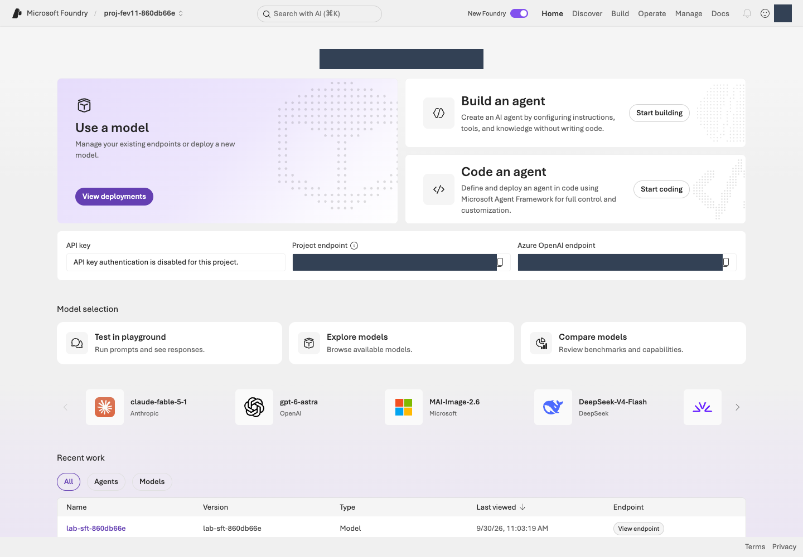
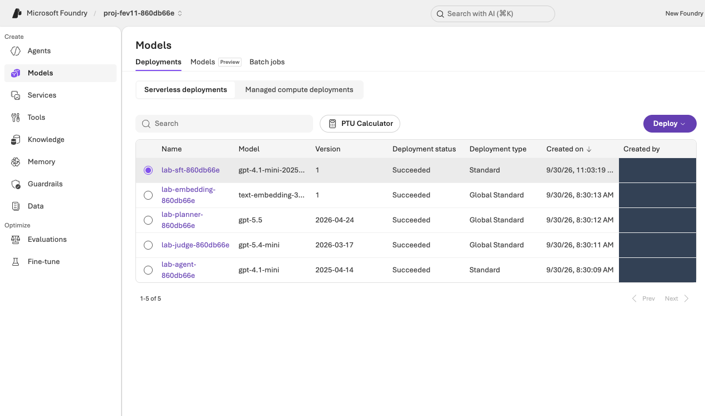

MICROSOFT FOUNDRY · PRINT EDITION
Foundry 학습 루프 실습 · 통합 인쇄본
Azure 계정 확인·환경 생성부터 Foundry 평가·최적화·비교와 승인된 삭제 또는 보존까지 10단계로 진행합니다. 운영자·강사·문제 해결·데이터 문서는 같은 경로를 돕는 참고 자료입니다. 문서 링크는 책 안으로, 파일 참조는 패키지 경로로 연결됩니다.
문서 기준
참가자 실습 가이드
고객지원 AI를 평가하고 개선합니다 · v1
CONTOSO ATLAS CLOUD · 하나의 실습 경로
고객지원 AI에 질문 12개를 보내 채점하고, 지침을 고친 뒤 같은 질문으로 다시 비교합니다. Azure·Foundry 사용 경험은 필요하지 않습니다. 다만 PC에 도구를 설치하고, 사용 권한과 비용 승인을 받은 Azure 환경이 필요합니다.
Azure는 Microsoft의 클라우드 서비스입니다. Microsoft Foundry는 Azure에서 AI 모델과 Agent를 만들고 평가하는 개발 플랫폼입니다. Agent(에이전트)는 모델에 지침과 도구를 연결한 AI입니다. 여기서는 가상의 Contoso Atlas Cloud 고객지원 Agent가 정책 문서를 검색해 답하게 합니다.
먼저 자신의 상황을 확인합니다. 운영자는 환경·권한·비용을 준비하는 담당자이며, 혼자 실습한다면 본인 또는 조직의 Azure 담당자가 맡습니다.
| 나의 상황 | 따라갈 경로 |
|---|---|
| 강사·운영자에게 준비된 환경을 받았습니다. | 01에서 본인 계정·PC를 확인합니다. 인수표로 02–03의 완료 상태와 명령 실행 담당자를 확인한 뒤 04로 이동합니다. 생성 명령은 반복하지 않습니다. |
| 승인된 구독이 있고 환경도 직접 만들겠습니다. | 01–10을 순서대로 진행합니다. 02의 생성·권한 설정은 승인받은 담당자가 실행합니다. |
| 사용할 구독·프로젝트 또는 비용 승인이 없습니다. | 아직 Azure 생성·호출을 시작하지 않습니다. 운영자 준비 안내를 담당자에게 전달합니다. |
시간·비용: 처음부터 준비한다면 반나절을 확보합니다. 권한·할당량 승인 대기 시간은 별도이며, 준비된 환경도 평가·최적화 대기 시간이 필요합니다. 모델 호출·Search·로그에는 비용이 발생할 수 있습니다. 브라우저를 닫아도 과금이 끝나지 않으므로 10의 정리까지 진행합니다.
- 01 계정·PC·권한 확인
- 02 Foundry 환경 생성
- 03 정책 연결·Agent 생성
- 04 데이터셋 등록
- 05 평가 기준 선택
- 06 Foundry Evaluation 실행
- 07 점수와 이유 읽기
- 08 Agent Optimizer로 지침 개선
- 09 재평가·v1/v2 비교
- 10 결과 보관·리소스 삭제
여기서 학습은 평가 결과를 읽고 지침을 개선하는 과정이며 모델 가중치를 다시 학습시키는 과정은 아닙니다. 제공된 합성 정책·질문만 사용합니다. 고객 원본 자료를 업로드하거나 평가 질문의 정답을 지침에 넣지 않습니다.
| 실행 위치 | 여기에서 하는 일 |
|---|---|
| Azure Portal | 계정·구독·권한, 실제 리소스 목록과 삭제 범위를 확인합니다. |
| 내 PC의 터미널 | 실습 파일을 준비하고 제공된 명령을 실행하는 창입니다. 여는 방법은 01에서 안내합니다. |
| Microsoft Foundry | 프로젝트·Agent·정책 도구를 확인하고 평가·Optimizer·비교 결과를 읽습니다. |
읽는 방법: 각 단계의 설명 → 실행 → 완료 기준 순서로 진행합니다. Azure Portal과 Foundry는 서로 다른 브라우저 탭에 열어 둡니다. 메뉴 이름은 화면에서 찾기 쉽도록 영어를 함께 적었습니다. 그림의 계정·프로젝트 이름은 복사하지 않고 자신의 값을 사용합니다.
01–03은 환경 준비, 04–09는 평가·개선, 10은 정리입니다. 04–06은 같은 평가 생성 화면에서 이어집니다. 중간에 새 평가를 만들지 않습니다. 읽음 표시는 개인 책갈피일 뿐 실제 작업 완료 표시는 아닙니다.
v1은 변경 전 Agent, v2는 지침을 바꾼 비교 후보입니다. 두 번호는 Agent 전체 구성의 버전입니다. 모델·도구·출력 형식은 유지합니다. 개선이 없어서 v1을 유지해도 올바른 실습 결과이며, v2 생성은 운영용 게시 승인이 아닙니다.
01. 계정·PC·권한을 확인합니다
이 단계에서 하는 일: 사용할 Azure 구독·권한과 로컬 실행 환경을 확인합니다.
중요한 이유: 브라우저와 CLI가 다른 계정이나 구독을 사용하면 권한 오류가 나거나 잘못된 환경에 자원을 만들 수 있습니다.
진행 방법·위치: Azure Portal에서 구독과 접근 권한을 확인한 뒤 터미널에서 도구·로그인·언어 설정을 대조합니다. 아직 Azure 리소스는 생성하지 않습니다.
화면을 열기 전에 알아둘 여섯 가지입니다. 외울 필요 없이, 아래 역할만 구분합니다.
- 테넌트 · Tenant / Directory
- 로그인할 조직의 사용자·권한을 관리하는 경계입니다. 같은 계정으로 여러 조직에 접근할 수 있어 조직도 확인합니다.
- 구독 · Subscription
- Azure 자원의 사용량과 요금이 묶이는 단위입니다. 실습 비용을 어느 구독에 청구할지 확인합니다.
- 리소스 그룹 · Resource group
- 함께 관리할 Azure 자원을 묶는 그룹입니다. 실습 전용 그룹을 쓰면 종료 시 삭제 범위를 확인하기 쉽습니다.
- 프로젝트 · Project
- Foundry 안에서 Agent·데이터·평가 작업을 구분하는 공간입니다. 이후 실습은 같은 프로젝트에서 진행합니다.
- 모델 · Model
- 답변을 생성하는 AI입니다. 모델을 호출할 수 있게 준비하는 작업을 배포(Deploy), 그 배포에 붙인 이름을 배포 이름이라고 합니다.
- 권한 · Role / Scope
- Role은 할 수 있는 일, Scope는 그 권한이 적용되는 범위입니다. 로그인 성공만으로 생성·평가·삭제 권한이 모두 생기지는 않습니다.
Azure 계정과 구독을 확인합니다
- Azure Portal에 실습용으로 안내받은 본인 계정으로 로그인합니다. 준비된 수업이라면 새 계정·구독을 만들지 않습니다. 사용할 계정이 전혀 없는 경우에만 Azure 계정 안내를 확인하고, 조직 계정은 구독 접근 승인을 먼저 받습니다.
- 상단 검색창에 Subscriptions를 입력하고 사용할 구독을 엽니다. 포털 상태가 Active인지 확인하고 Subscription ID와 Directory/Tenant ID를 기록합니다. 같은 정상 구독은 CLI에서 Enabled로 표시합니다. 구독이 보이지 않으면 우측 상단 계정의 디렉터리·구독 필터를 확인합니다.
- Access control (IAM, 권한 관리) → Check access에서 본인의 역할과 적용 범위를 확인합니다. 이전 UI에서는 View my access로 표시할 수 있습니다. 직접 환경을 만드는 담당자는 리소스 생성과 역할 할당 권한이 모두 필요합니다. 준비된 환경의 참가자에게 같은 생성 권한을 요구하지 않습니다. 담당자별 필요 권한을 확인합니다.
- 실습 비용 한도, 사용 종료 시각, 리소스 삭제 담당자를 정합니다. 권한·구독·비용 승인이 없으면 생성 명령을 실행하지 않습니다. 구독 전체 Owner를 새로 부여하거나 조직 보안 정책을 해제하는 방식으로 해결하지 않습니다.

web/assets/portal/shared/21-subscription-overview.png)
web/assets/portal/shared/22-check-access.png)도구와 실습 파일을 준비합니다
Python 3.11–3.14, Git, Azure CLI를 설치합니다. Python은 제공된 프로그램 실행용, Git은 실습 파일 내려받기용, Azure CLI는 az 명령으로 Azure에 로그인·조회하는 도구입니다. 회사 PC에서 설치가 제한되면 담당자에게 요청합니다.
이미 설치했다면 설치 확인부터 진행하고, 정상인 도구는 다시 설치하지 않습니다. Windows·macOS의 아래 예시는 지원 범위를 벗어난 최신 Python이 선택되지 않도록 3.13을 지정합니다. 이미 다른 지원 버전을 사용한다면 py -3.13·python3.13을 해당 버전의 명령으로 바꾸고, 버전 확인과 가상환경 생성에 같은 Python을 사용합니다. 3.10 이하·3.15 이상은 이 실습의 지원 범위가 아닙니다.
먼저 내 PC의 터미널을 엽니다. Windows는 시작 메뉴에서 PowerShell, macOS는 Spotlight에서 Terminal(터미널), Linux는 앱 메뉴에서 터미널을 검색합니다. Azure Portal의 Cloud Shell이나 >>>가 보이는 Python 입력창은 이 가이드의 실행 위치가 아닙니다.
명령 읽는 법: 한 명령씩 실행하고 끝난 뒤 다음 명령으로 이동합니다. 긴 명령이 화면·PDF에서 여러 줄로 보이더라도 명령 중간에 줄바꿈을 넣지 않습니다.
복사 버튼은 상자 전체를 복사합니다. 여러 명령이 들어 있다면 편집기에 먼저 붙여넣고 한 명령씩 실행합니다. YOUR_...는 자신의 값으로 바꾸고 바깥 큰따옴표는 유지합니다.
공통 터미널은 모든 운영체제에서 사용합니다. macOS/Linux·PowerShell 상자는 바로 위 설명을 읽고 자신의 운영체제에 해당하는 것만 실행합니다. 오류가 나면 다음 명령으로 넘어가지 않고 해당 단계의 문제 해결을 확인합니다.
Windows 설치 · macOS 설치 · Linux 설치 중 하나를 마친 뒤 설치 확인으로 이동합니다.
Windows · PowerShell에서 설치합니다
PowerShell에서 winget --version을 실행합니다. 버전이 나오면 Windows 패키지 관리자인 WinGet으로 아래 명령을 한 줄씩 실행합니다. 설치 동의나 관리자 권한 요청은 조직의 승인 범위에서 직접 확인합니다.
winget install --exact --id Python.Python.3.13 --source winget
winget install --exact --id Git.Git --source winget
winget install --exact --id Microsoft.AzureCLI --source winget
WinGet이 없거나 사용할 수 없다면 공식 설치 파일을 사용합니다. 두 방법을 모두 실행할 필요는 없습니다.
| 도구 | 다운로드와 설치 화면에서 확인할 항목 |
|---|---|
| Python | Windows 다운로드에서 Python 3.13의 최신 패치 버전과 PC에 맞는 installer를 선택합니다. embeddable package가 아닌 일반 설치 파일에서 Add python.exe to PATH를 선택하고 pip·Python Launcher를 포함하여 설치합니다. |
| Git | Git for Windows에서 PC에 맞는 설치 파일을 받습니다. PATH 선택 화면의 Git from the command line and also from 3rd-party software를 유지하여 PowerShell에서도 사용할 수 있게 합니다. |
| Azure CLI | Windows 공식 설치 안내의 Microsoft Installer (MSI)를 사용합니다. 일반적인 x64 PC는 64-bit MSI를 선택합니다. |
설치 후 새 터미널에서 세 도구 확인으로 이동합니다. py가 인식되지 않으면 Python 설치의 Launcher 옵션을 확인합니다.
macOS · Homebrew로 설치합니다
터미널에서 brew --version을 실행합니다. 명령이 없으면 Homebrew 공식 설치 안내를 따라 설치하고, 마지막에 표시되는 Next steps의 PATH 설정까지 마친 뒤 새 터미널에서 다시 확인합니다. 회사 PC의 설치·Command Line Tools 승인 절차를 우회하지 않습니다.
brew update
brew install python@3.13 git azure-cli
Python은 Homebrew의 버전 지정 패키지, Azure CLI는 Microsoft의 macOS 설치 안내를 따릅니다. 이 경로에서는 python3.13을 사용합니다. 기존 python3는 macOS 기본 Python이나 다른 버전을 가리킬 수 있으므로 시스템 Python을 덮어쓰거나 강제로 연결하지 않습니다.
Linux · Ubuntu 24.04 LTS 예시입니다
다음은 기본 Python 3.12를 제공하는 Ubuntu 24.04 LTS 기준입니다. 다른 배포판은 해당 배포판의 Python·Git 설치 안내와 Azure CLI 공식 설치 안내를 따릅니다. Python 버전이 지원 범위 밖이면 시스템 Python을 교체하지 말고 담당자에게 지원되는 실행 환경을 요청합니다.
sudo apt update
sudo apt install python3 python3-venv python3-pip git curl
curl -fsSL 'https://azurecliprod.blob.core.windows.net/$root/deb_install.sh' -o install-azure-cli.sh
마지막 명령은 Microsoft의 Ubuntu/Debian용 설치 스크립트를 내려받기만 합니다. install-azure-cli.sh를 편집기로 열어 내용을 확인하고, 관리자 권한으로 패키지를 설치할 승인을 받은 경우에만 다음을 실행합니다. sudo 권한이 없으면 담당자에게 설치를 요청합니다.
sudo bash install-azure-cli.sh
새 터미널에서 설치를 확인합니다
설치가 끝나면 열려 있던 터미널 창을 모두 닫고 다시 엽니다. PATH는 명령을 찾는 경로 목록이며, 기존 창에는 새 설치 경로가 반영되지 않을 수 있습니다. VS Code의 터미널을 사용한다면 VS Code도 종료한 뒤 다시 엽니다.
Windows PowerShell:
py -3.13 --version
git --version
az version
macOS · 위 Homebrew 설치 경로:
python3.13 --version
git --version
az version
Linux · 위 Ubuntu 설치 경로:
python3 --version
git --version
az version
| 확인 항목 | 정상 출력과 진행 기준 |
|---|---|
| 실습용 Python | Python 3.13.x 같은 버전이 나옵니다. x는 실제 패치 번호이며 3.11·3.12·3.13·3.14 중 하나여야 합니다. |
| Git | git version 2.x...처럼 설치된 버전이 나옵니다. |
| Azure CLI | JSON에 "azure-cli": "2.x..."처럼 버전이 나옵니다. 이 확인에는 Azure 로그인이 필요하지 않습니다. |
az version에 표시되는 Python은 Azure CLI 자체의 실행 환경이며, 실습용 Python 설치 확인을 대신하지 않습니다. 세 명령이 모두 성공한 뒤에만 파일 다운로드·가상환경 생성으로 진행합니다. command not found, not recognized, Python 대신 Microsoft Store가 열리는 경우는 설치·PATH 문제 해결을 확인합니다.
실습 파일을 내려받습니다
git clone https://github.com/junwoojeong100/foundry-evaluation-labs-v1.git
cd foundry-evaluation-labs-v1
이미 내려받았다면 clone을 반복하지 않고 해당 폴더로 이동합니다. GitHub의 Code → Download ZIP으로 받은 경우 먼저 압축을 풀고 pyproject.toml과 requirements.lock이 있는 폴더를 엽니다. HTML 파일 한 개만 내려받으면 코드·데이터·그림이 누락됩니다.
확인한 Python으로 가상환경을 만듭니다
이후 명령은 pyproject.toml과 requirements.lock이 있는 실습 폴더에서 실행합니다. .venv는 이 실습만의 Python 패키지 공간입니다. 앞에서 버전을 확인한 같은 Python으로 만들며, 아래 세 경로 중 자신의 운영체제에 맞는 하나만 실행합니다.
macOS · 위 Homebrew 설치 경로:
python3.13 -m venv .venv
source .venv/bin/activate
Linux · 위 Ubuntu 설치 경로:
python3 -m venv .venv
source .venv/bin/activate
Windows PowerShell에서는 다음을 실행합니다.
py -3.13 -m venv .venv
.\.venv\Scripts\Activate.ps1
PowerShell 실행 정책 때문에 활성화가 차단되면 조직 정책을 변경하지 않습니다. 이후 명령의 python을 .\.venv\Scripts\python.exe로 바꾸어 실행합니다. 기존 .venv가 있다면 다른 작업의 환경인지 확인하고 임의로 덮어쓰지 않습니다.
가상환경을 준비한 뒤 다음 공통 명령을 실행합니다. 첫 두 명령에서 Python 3.11–3.14와 .venv 안의 pip 경로를 확인한 뒤 패키지를 설치합니다.
python --version
python -m pip --version
python -m pip install -r requirements.lock
python -m lab --help
python scripts/build_datasets.py --language ko --check
명령 목록과 데이터 검사 성공을 확인합니다. ModuleNotFoundError가 나오면 python -m pip --version으로 .venv의 Python을 사용하는지 확인합니다. 시스템 Python에 임의로 패키지를 설치하지 않습니다.
CLI 로그인과 언어를 고정합니다
먼저 아래 YOUR_SUBSCRIPTION_ID를 앞에서 기록한 구독 ID로 교체합니다. az login이 여는 브라우저에서 같은 계정으로 로그인한 뒤 터미널로 돌아옵니다.
az login
az account list --query "[].{name:name,id:id,state:state}" -o table
az account set --subscription "YOUR_SUBSCRIPTION_ID"
az account show --query "{user:user.name,tenant:tenantId,subscription:id,state:state}" -o json
YOUR_SUBSCRIPTION_ID를 앞에서 기록한 ID로 교체합니다. 마지막 출력의 user, tenant, subscription을 포털과 대조하고 이후 계획에 사용할 값으로 기록합니다. 브라우저와 CLI의 로그인은 별개입니다. 다른 디렉터리가 선택됐다면 승인된 디렉터리로 az login --tenant "YOUR_TENANT_ID"를 실행합니다.
이 한국어 실습의 환경 이름은 lab-ko로 사용합니다. 같은 이름의 로컬 계획이 이미 있으면 새로 만들지 않고 원래 기록을 재개합니다. 별도 수업이면 lab-ko-02처럼 새 이름을 정하고 이후 모든 경로와 prefix도 함께 바꿉니다.
macOS/Linux에서는 다음 환경 변수를 지정합니다.
export LAB_LANGUAGE=ko
export LAB_ARTIFACTS_DIR="$PWD/.lab/lab-ko/artifacts"
Windows PowerShell에서는 다음 환경 변수를 지정합니다.
$env:LAB_LANGUAGE = "ko"
$env:LAB_ARTIFACTS_DIR = Join-Path (Get-Location).Path ".lab/lab-ko/artifacts"
새 터미널을 열 때마다 가상환경 활성화와 이 두 변수를 다시 지정합니다. LAB_LANGUAGE를 바꾸면서 기존 실행 폴더를 재사용하지 않습니다. 생성되는 .env는 설정 파일이며 source나 PowerShell 스크립트로 실행하지 않습니다.
준비된 환경을 받은 경우: 인수표에서 본인의 실행 담당 범위를 확인합니다. 본인 계정으로 명령·Python 프로그램을 실행할 설정이 없다면 운영자가 02–03의 준비와 06의 ID 조회·09의 명령을 수행하고 결과를 전달합니다. 운영자의 .env나 로그인 세션을 그대로 복사해 쓰지 않습니다.
완료 기준: Python 3.11–3.14·Git·Azure CLI의 버전을 확인했고, 같은 사용자·테넌트·구독을 사용하며, 가상환경의 Python 명령과 한국어 데이터 검사가 성공합니다. 문제가 있으면 환경 오류 해결을 확인합니다.
02. Foundry 환경을 생성합니다
이 단계에서 하는 일: 전용 리소스 그룹 안에 Foundry 프로젝트·모델·Search·모니터링 기반을 준비합니다.
중요한 이유: 리소스 그룹은 비용과 정리 범위를 묶고, 프로젝트는 Agent·평가를 구분합니다. 빈 프로젝트 하나만으로 정책 검색까지 준비되지는 않습니다.
진행 방법·위치: 터미널에서 계획·승인·생성을 순서대로 수행한 뒤 두 포털에서 결과를 대조합니다. 준비된 환경은 새로 만들지 않고 인수 정보만 확인합니다.
이미 준비된 환경이면 생성 명령을 실행하지 않습니다. 아래 포함 관계와 포털의 실제 값, 02–03의 완료 근거를 인수표와 대조한 뒤 04로 이동합니다.
- Azure 구독사용량·비용 관리
- 리소스 그룹이번 실습의 자원 묶음
- Foundry 리소스AI 서비스와 모델 배포
- 프로젝트Agent·데이터·평가 작업
Endpoint(엔드포인트)는 프로그램이 서비스에 연결할 때 쓰는 주소입니다. 이 실습은 프로젝트의 Project endpoint를 사용합니다. 옆에 있는 Azure OpenAI endpoint와 서로 바꾸어 사용하지 않습니다.
로컬 생성 계획을 만듭니다
01에서 기록한 값을 아래 표대로 교체합니다. ID는 이름이 아니라 자원을 식별하는 값입니다. 구독의 표시 이름을 ID 자리에 넣지 않습니다.
| 교체할 부분 | 가져올 값 |
|---|---|
YOUR_SUBSCRIPTION_ID |
az account show의 subscription |
YOUR_TENANT_ID |
같은 출력의 tenant |
YOUR_SIGN_IN_NAME |
같은 출력의 user |
이 명령은 내 PC의 .lab/lab-ko/에 계획·미승인 승인서 예시만 만들고 Azure를 호출하지 않습니다.
python -m lab bootstrap plan --subscription "YOUR_SUBSCRIPTION_ID" --tenant "YOUR_TENANT_ID" --expected-user "YOUR_SIGN_IN_NAME" --environment lab-ko --location northcentralus
plan_status: CREATED_LOCAL_ONLY, mutations_performed: false와 config_path를 확인합니다. BLOCKED_AWAITING_APPROVAL은 아직 비용 승인이 없다는 뜻이며 생성 실패나 Azure 생성 완료가 아닙니다.
| 생성 파일 | 확인할 내용 |
|---|---|
.lab/lab-ko/config.json |
구독·테넌트·사용자, 자동 생성 리소스 이름, 모델·버전·용량입니다. 직접 수정하지 않습니다. |
.lab/lab-ko/approval.example.json |
아직 승인되지 않은 비용·변경 범위입니다. |
.lab/lab-ko/manifest.json |
생성·소유권·중단 상태를 추적하는 기록입니다. 보존합니다. |
.lab/lab-ko/.env |
아직 없습니다. 실제 생성이 완료된 뒤 만들어지는 런타임 설정입니다. |
파일은 텍스트 편집기의 파일 열기로 확인합니다. .lab는 실습 기록 폴더이며 운영체제에 따라 숨김 폴더로 보일 수 있습니다. JSON은 설정을 이름: 값으로 저장하는 형식입니다. Word 문서로 변환하거나 파일 확장자를 바꾸지 않습니다.
모델 역할은 답변 생성(Agent), 채점(Judge), 지침 제안·검색 계획(Optimizer/planner), 검색용 숫자 변환(embedding)으로 나눕니다. 여기서 모델 자체를 직접 개발하지는 않습니다.
이 저장소의 기본 생성 지역은 North Central US (northcentralus)입니다. 기본 배포는 Agent gpt-6-sol, Judge gpt-6-luna, Optimizer/검색 planner gpt-5.5, embedding text-embedding-3-small입니다. 정확한 버전·SKU(배포 유형)·요청 용량은 모델 표와 계획 파일에서 확인합니다. 다른 지역·모델로 조용히 대체하지 않습니다.
모델별 최소 권장 TPM을 확보합니다
TPM(Tokens Per Minute)은 배포별 분당 토큰 처리 한도이며, 모델의 최대 입력 길이나 실제 처리 속도와는 다릅니다. 아래는 한 환경에서 평가·Optimizer를 한 번에 하나씩 실행하는 12문항 실습의 시작 기준입니다. 모든 요청에서 입증된 절대 최소치나 429 오류가 없다는 보장이 아니라, 평가기·검색 호출을 고려한 여유 포함 최소 권장값입니다.
| 역할·모델 | 실습 시작 최소 권장 TPM | 새 기본 계획의 ARM 용량 |
|---|---|---|
Agent · gpt-6-sol |
100,000 | 100 |
Judge · gpt-6-luna |
100,000 | 100 |
Optimizer / 검색 planner · gpt-5.5 |
100,000 | 100, 두 역할이 같은 배포를 공유 |
Embedding · text-embedding-3-small |
10,000 | 10 |
새 bootstrap plan은 이 용량으로 계획을 만듭니다. ARM 용량은 모델·SKU별 단위이므로 다른 모델에 무조건 1,000을 곱하지 않습니다. 생성 후 실제 배포의 TPM을 아래 runtime preflight로 확인합니다. 구독에 남은 할당량이 있어도 해당 배포에 충분히 할당되지 않았다면 준비 완료가 아닙니다.
기존 계획·배포는 자동으로 상향되지 않습니다. 준비된 환경의 설정과 승인 범위는 운영자 TPM 설정 안내로 확인합니다. config.json·승인서·manifest를 직접 고쳐 검사를 우회하지 않습니다.
여러 사용자가 같은 배포를 공유하거나 작업을 겹치면 추가 용량이 필요합니다. Azure는 실제 청구 토큰뿐 아니라 입력·최대 출력 설정으로 추정한 토큰을 제한에 반영하며, 별도의 RPM(분당 요청 수)·짧은 구간의 요청 집중도도 제한합니다. 공식 TPM·RPM 설명을 참고합니다.
준비 상태와 비용 승인을 확인합니다
python -m lab bootstrap preflight --config .lab/lab-ko/config.json
Preflight는 실행 전 준비 상태 검사입니다. readiness_status: READY인지 확인합니다. 할당량(quota)은 구독에 허용된 사용 한도, 용량(capacity)은 해당 지역의 실제 제공 여력입니다. 막히면 reason을 읽고 생성 오류 대응으로 이동합니다. 아직 승인서가 없으므로 READY여도 전체 상태는 승인 대기일 수 있습니다. 지역이나 환경 이름을 바꾸어 반복 생성하지 않습니다.
실제 비용 승인 담당자가 .lab/lab-ko/approval.example.json을 편집기에서 열고 다른 이름으로 저장하여 .lab/lab-ko/approval.json을 만듭니다. 원본 scope_sha256, models, retention_days는 유지합니다. 승인서 작성표의 모든 필드를 실제 승인에 맞춰 채웁니다. 특히 승인자, 현재 유효한 시작·만료 시각, 통화·예산, 대기·보관 시간과 리소스 생성·RBAC·Global 처리 동의가 필요합니다.
approved: true만 바꾸면 완료되지 않습니다. 예산 숫자는 Azure의 자동 과금 차단 장치가 아니며, 문서의 예시가 사용자의 지출 승인을 대신하지 않습니다.
python -m lab bootstrap preflight --config .lab/lab-ko/config.json --approval .lab/lab-ko/approval.json
readiness_status: READY와 status: READY_FOR_APPROVED_APPLY를 모두 확인한 뒤에만 다음 생성 명령을 실행합니다.
승인한 환경을 생성하고 포털에서 확인합니다
python -m lab bootstrap apply --config .lab/lab-ko/config.json --approval .lab/lab-ko/approval.json
python -m lab bootstrap status --config .lab/lab-ko/config.json --approval .lab/lab-ko/approval.json
첫 명령은 리소스·모델·연결·리소스 범위 역할을 실제로 생성합니다. 시간이 걸릴 수 있으므로 다른 창에서 같은 apply를 실행하지 않습니다. apply의 APPLIED, .lab/lab-ko/.env 생성, status의 phase: succeeded와 대상 리소스의 존재를 확인합니다. 대기 초과이면 status부터 확인하며 재개 절차를 따릅니다.
- Azure Portal → Resource groups에서
config.json의names.resource_group을 검색합니다. 구독·지역·리소스 목록을 확인합니다. - Foundry를 열고 New Foundry를 사용합니다. Select a project to continue가 나타나면
names.project와 같은 프로젝트를 선택하고 Let's go를 누릅니다. 환영 안내가 나타나면 읽고 Close로 닫습니다. 이미 New Foundry라면 좌측 상단 프로젝트 선택을 사용합니다. Classic의 hub 기반 프로젝트와 혼동하지 않습니다. - 프로젝트의 Home(일부 UI의 Overview)에서 Project endpoint를 확인합니다.
.env의AZURE_AI_PROJECT_ENDPOINT와 같은https://계정명.services.ai.azure.com/api/projects/프로젝트명형식이어야 합니다. - Models + endpoints 또는 Build → Models에서
.env의MODEL_DEPLOYMENT,JUDGE_DEPLOYMENT,OPTIMIZER_DEPLOYMENT,EMBEDDING_DEPLOYMENT에 대응하는 실제 배포를 확인합니다. 메뉴 명칭이 달라지면 화면 위치 안내를 참고합니다.

web/assets/portal/23-resource-group.png)
names.project와 대조하고 Let's go로 엽니다. 이 화면은 기존 프로젝트 선택이며 추가 생성이 아닙니다. 이미 bootstrap을 완료했다면 Create a new project로 중복 생성하지 않습니다. 원본 크기로 보기 (파일: web/assets/portal/24-select-project.png)
web/assets/portal/25-project-overview.png)python -m lab --config .lab/lab-ko/.env preflight
checks의 agent_tpm, judge_tpm, optimizer_tpm, iq_planner_tpm, embedding_tpm을 확인합니다. 각 항목의 observed가 실제 배포 TPM, expected가 위 최소 권장값입니다. 부족하거나 토큰 제한을 확인할 수 없으면 BLOCKED이며 다음 호출 단계로 진행하지 않습니다. 설정을 준비한 뒤 같은 읽기 전용 preflight를 다시 실행합니다.
완료 기준: 런타임 preflight 전체와 다섯 TPM 항목이 PASS이고, 자신의 프로젝트와 역할별 배포를 확인합니다. 이는 읽기 전용 구성 확인이며 실제 모델 응답 성공은 다음 단계에서 확인합니다.
03. 정책을 연결하고 Agent를 생성합니다
이 단계에서 하는 일: 합성 정책을 검색하는 읽기 전용 도구와 비교 기준인 v1 Agent를 연결합니다.
중요한 이유: 모델이 기억으로 답하는 것과 실제 정책을 검색해 답하는 것은 다릅니다. 검색이 사용자 권한으로 성공해도 Agent의 관리 ID 권한은 별도로 확인해야 합니다.
진행 방법·위치: 터미널에서 모델·검색·Agent를 준비하고 Foundry에서 지침·도구와 실제 응답을 확인합니다. 데이터 전송·호출은 승인된 범위에서 한 번씩 수행합니다.
모델과 정책 검색을 확인합니다
이 세 명령은 실제 업로드·모델 호출을 수행하며 비용이 발생할 수 있습니다. 준비된 환경은 담당자가 확인한 결과를 인수하고 반복하지 않습니다. 직접 준비한다면 각 명령의 정상 결과를 확인한 뒤 다음 명령으로 이동합니다.
1. 모델이 실제로 응답하는지 확인합니다. smoke는 짧은 동작 확인입니다.
먼저 02의 TPM 검사를 통과해야 합니다. 짧은 응답 한 번의 성공만으로 전체 평가에 필요한 처리량을 확보했다고 판단하지 않습니다.
python -m lab --config .lab/lab-ko/.env smoke --run-id model-smoke --confirm
출력의 status: completed를 확인합니다.
2. 정책 검색을 준비합니다. 제공된 합성 정책 8개 (파일: data/knowledge/documents.json)를 검색 서비스에 올립니다.
python -m lab --config .lab/lab-ko/.env iq prepare --confirm
출력의 uploaded_documents: 8을 확인합니다. 프로그램이 검색 인덱스(검색용 문서 모음), knowledge base(지식 베이스), MCP 연결(Agent가 검색 도구를 호출하는 연결)을 준비합니다. 내부 코드를 수정할 필요는 없습니다.
3. 질문으로 정책이 검색되는지 확인합니다.
python -m lab --config .lab/lab-ko/.env iq probe --confirm
status: retrieval_verified와 비어 있지 않은 출처를 확인합니다. created_not_retrieval_tested는 생성만 성공했다는 뜻입니다. 오류가 발생하면 기록을 지우지 않고 검색 오류 해결을 확인합니다.
포털에서도 Build → Knowledge → Knowledge bases를 열고 Connection과 생성된 지식 베이스·Knowledge sources를 확인합니다. 목록의 지식 베이스 한 개가 정책 문서 한 개를 뜻하지는 않습니다.

iq probe로 확인합니다. 무료 검색 배너는 전체 실습이 무료라는 뜻이 아니며, 준비 확인을 위해 요금제 변경 버튼을 누르지 않습니다. 원본 크기로 보기 (파일: web/assets/portal/26-knowledge-base.png)같은 조건으로 평가할 v1을 만듭니다
python -m lab --config .lab/lab-ko/.env native-agent --version 1 --confirm
이 명령은 prompts/baseline.txt의 지침과 방금 확인한 정책 도구로 lab-ko-iq 버전 1을 만듭니다. 출력의 agent_name, version, receipt를 기록합니다. Receipt는 실행 결과를 저장한 기록 파일입니다. 같은 소유 환경·동일 구성이면 기존 v1을 재사용하며, 다른 Agent를 인수하거나 v3를 만들지 않습니다.

web/assets/portal/27-agent-configuration.png)포털에서 Build → Agents → lab-ko-iq → 버전 1을 엽니다. 표시 이름은 명령 출력이 기준입니다. Test/Playground에서 다음 질문을 한 번 보냅니다.
2026년 9월에 처음 월 구독을 결제했습니다. 환불 신청 조건이 궁금합니다.
답변은 일반 채팅 문장 대신 네 항목의 JSON으로 표시됩니다. 화면에 중괄호와 따옴표가 보여도 오류가 아닙니다.
| 응답 항목 | 읽는 방법 |
|---|---|
answer |
사용자에게 전달할 한국어 답변입니다. |
citations |
답변 근거인 ATLAS-* 정책 ID 목록입니다. |
route |
answer 답변, clarify 추가 질문, escalate 사람에게 인계, refuse 거절 중 하나입니다. |
needs_human |
사람 인계가 필요한지 나타내는 true/false입니다. route가 escalate일 때만 true입니다. |
실행 상세에서 knowledge_base_retrieve의 실제 호출·응답을 확인하고 정책 ID와 답변 근거를 대조합니다. Agent의 관리 ID는 Azure 서비스가 사용하는 신원으로, 로그인한 본인의 신원과 다릅니다. 직접 검색이 성공해도 Agent의 검색 권한은 별도로 확인합니다.
완료 기준: 자신의 v1이 실제 질문에 응답하고 정책 도구 호출이 확인됩니다. JSON 형식이나 연결 성공만으로 품질이 검증됐다고 표시하지 않습니다. 다른 구성 요소를 수정하는 실습은 추가하지 않으며 다음 단계부터 관리형 평가에 집중합니다.
04. 데이터셋을 등록합니다
이 단계에서 하는 일: 같은 질문으로 비교할 수 있도록 한국어 dev12 파일을 한 번 등록합니다.
중요한 이유: 질문이나 참고 답변이 달라지면 지침 변경의 효과를 분리할 수 없습니다. 참고 답변을 Agent에게 미리 주어도 공정한 비교가 아닙니다.
진행 방법·위치: 터미널에서 행 수·해시를 확인하고 Foundry 평가 마법사에서 원본 파일을 등록하거나 같은 버전을 재사용합니다.
같은 평가 생성 과정의 1/3입니다. 04 데이터 선택 → 05 채점 기준 설정 → 06 제출 순서입니다. 이 단계에서는 아직 Submit을 누르지 않습니다.
데이터셋은 평가에 사용할 질문 묶음입니다. 이 실습에서는 data/optimizer/dev.jsonl (파일: data/optimizer/dev.jsonl)의 JSONL 12행을 사용하며, 이를 줄여 dev12라고 부릅니다. 한 줄이 질문 한 건인 JSON 형식입니다. 편집하거나 Excel·CSV·JSON 배열로 변환하지 않습니다.
python -c "import hashlib,pathlib; p=pathlib.Path('data/optimizer/dev.jsonl'); print('rows =',len(p.read_text(encoding='utf-8').splitlines())); print('sha256 =',hashlib.sha256(p.read_bytes()).hexdigest())"
rows = 12와 SHA-256 값을 개인 메모에 기록합니다. SHA-256(해시)은 파일 내용의 지문으로, 이후에도 같은 파일인지 확인하는 값입니다. 외우거나 직접 입력할 필요 없이 출력된 값을 복사해 둡니다.
| 열 | 형식 | 용도 |
|---|---|---|
query |
문자열 | Agent에 보내는 유일한 입력 |
context |
문자열 | 지원 평가기와 사례 검토용 정책 참고 자료 |
ground_truth |
JSON 문자열 | 구조화 참고 답변이며 생성 프롬프트가 아닙니다. |
질문만 Agent에 전달하고, context·ground_truth는 지원 평가기와 사람의 사례 검토에 사용합니다. 제공된 나머지 데이터 파일은 이번 필수 실습에서 사용하지 않습니다.
- 질문 · query데이터 한 행씩 전달
- Agent모델 + 지침 + 정책 검색
- 실제 답변answer 등 네 항목
- 평가기 + Judge점수와 채점 이유
이제 Foundry에서 다음 순서로 선택합니다. 운영자가 다른 이름을 전달했다면 아래 예시 이름 대신 인수표의 값을 사용합니다.
- Build → Evaluations → Create → Create new evaluation을 엽니다. 메뉴가 단수 Evaluation으로 보이면 같은 평가 메뉴입니다.
- 대상 유형 Agent에서
lab-ko-iq, 버전 1을 선택합니다. Pin currently latest는 최신 버전이 실제로 1일 때만 사용합니다. 버전을 바꾼 뒤 대상 체크가 풀렸다면 다시 체크하고 대상 한 개인지 확인합니다. - Individual turns(질문별 응답 평가), One time(일회성 실행)을 선택합니다. 새 질문을 생성하는 Synthetic data는 선택하지 않습니다.
- Upload new dataset → Browse에서 내 PC의 실습 폴더 안에 있는
data/optimizer/dev.jsonl을 고릅니다. 이름은lab-ko-dev12, 첫 버전은1로 지정하고 등록 완료를 기다립니다. 이미 등록되어 있으면 Existing dataset에서 같은 이름·버전을 선택합니다. query,context,ground_truth열을 확인합니다. 5행 미리 보기는 전체 건수가 아닙니다. 원본은 12행이며, 데이터셋 이름·버전을 메모한 뒤 같은 생성 화면에서 05로 이어갑니다.

web/assets/portal/15-evaluation-dataset.png)완료 기준: 명시적 v1과 변경 없는 12행 데이터셋을 선택하고 건수·버전·해시를 기록했습니다. 데이터 계약.
05. 평가 기준을 선택합니다
이 단계에서 하는 일: Relevance·TaskAdherence와 실제 Judge 배포를 선택합니다.
중요한 이유: 점수의 척도·통과 기준·입력 매핑을 먼저 정해야 결과를 본 뒤 기준을 바꾸는 일을 피할 수 있습니다. 두 평가기는 척도가 서로 다릅니다.
진행 방법·위치: Foundry의 Criteria에서 평가기별 설정을 열고 임계값과 Judge를 확인합니다. Agent에는 query만 전달합니다.
같은 평가 생성 과정의 2/3입니다. 04에서 열어 둔 화면을 이어서 사용합니다. 아직 새 평가를 만들거나 Submit을 누르지 않습니다.
평가기(Evaluator)는 채점 기준, Judge는 그 기준으로 채점하는 AI 모델입니다. 관리형 평가는 내 PC가 아니라 Foundry 서비스가 실행·결과를 관리한다는 뜻입니다.
- Configure agents에서 지침을 덮어쓰는 custom prompt override는 비워 둡니다. 사용자 입력은
{{item.query}}만 사용합니다. 이는 각 행의 질문을 넣는 템플릿이므로 중괄호까지 그대로 두고, 자신의 질문이나 참고 답변으로 바꾸지 않습니다. - 필드 매핑 화면이 나타나면 입력
query를 데이터의query열과 연결합니다. 매핑은 입력 칸과 데이터 열의 짝을 정하는 설정입니다.context·ground_truth를 Agent 입력에 붙이지 않습니다. - Criteria → Add evaluators에서 아래 두 평가기만 남기고 다른 기본 선택은 해제합니다. TaskAdherence는 Task Adherence로 표시될 수도 있습니다.
- 각 평가기의 설정을 열어 아래 기준을 적용하고 Apply를 누릅니다. Evaluation model/Judge에는
.env또는 인수표의JUDGE_DEPLOYMENT에 해당하는 배포 이름을 선택합니다.
| 평가기 | 의미 | 설정 |
|---|---|---|
| Relevance | 질문에 관련된 답변인지, 1–5점 | Threshold 4: 4·5점은 통과, 1–3점은 미통과입니다. |
| TaskAdherence | 과제 지시를 따르는지, 이진 0/1 Pass/Fail | 통과 1, 미통과 0입니다. 임계값 4가 아닙니다. |
응답(response)의 서비스 자동 매핑은 그대로 유지합니다. 응답 칸이 Unassigned이거나 준비한 Judge가 목록에 없다면 임의 값을 넣지 말고 운영자 매핑 점검을 요청합니다.
| 역할 | 모델·버전 | 배포 |
|---|---|---|
| Agent | gpt-6-sol / 2026-09-22 | 자신의 MODEL_DEPLOYMENT 값입니다. |
| 평가 Judge | gpt-6-luna / 2026-09-22 | 자신의 JUDGE_DEPLOYMENT 값입니다. |
| Optimizer 생성 | gpt-5.5 / 2026-04-24 | 자신의 OPTIMIZER_DEPLOYMENT 값입니다. |
Agent·Judge·Optimizer는 역할별 지원 모델이 다릅니다. Optimizer 지원 목록을 확인하고 각 역할에 준비한 배포를 선택합니다.

JUDGE_DEPLOYMENT에 해당하는 배포를 선택합니다. 원본 크기로 보기 (파일: web/assets/portal/16-evaluation-criteria.png)완료 기준: 두 평가기 척도·임계값·매핑·실제 Judge를 기록했습니다. 오래된 로컬 환경 기본값이 아니라 저장된 원격 정의가 Judge를 결정합니다.
다음: 06. Foundry Evaluation 실행 →
06. Foundry Evaluation을 실행합니다
이 단계에서 하는 일: 고정된 v1의 실제 답변을 생성하고 관리형 평가 점수·이유를 수집합니다.
중요한 이유: 이후 후보와 비교할 출발점이 필요합니다. Completed는 처리가 끝났다는 뜻이지 모든 답변이 정확하다는 뜻은 아닙니다.
진행 방법·위치: Foundry에서 검토 후 한 번 제출하고 전체 12건을 확인합니다. 터미널의 읽기 전용 조회로 실제 evaluation ID와 run ID를 기록합니다.
같은 평가 생성 과정의 3/3입니다. 04–05에서 정한 설정을 검토하고 여기서 한 번만 Submit합니다. 제출하면 실제 모델 호출 비용이 발생합니다.
Evaluation은 저장된 평가 설정, run은 그 설정으로 수행한 한 번의 실행입니다. v1의 첫 실행을 기준선(baseline)으로 삼습니다.
- Review에서 v1 + 원본 dev12 + query 전용 입력 + 두 평가기 + 자신의 Luna Judge를 확인합니다.
- 평가 이름은
lab-ko-learning-loop, run 이름을 지정할 수 있으면baseline-v1로 입력합니다. 준비된 수업은 인수표의 이름을 사용합니다. 기준선 run이 이미 완료됐다면 다시 제출하지 않고 그 결과를 엽니다. - 아직 실행하지 않은 승인된 작업만 Submit으로 한 번 제출합니다. 단추를 누른 직후가 아니라 아래의 Completed와 결과 12건을 확인해야 실행 완료입니다.

web/assets/portal/17-evaluation-review.png)Evaluations → 방금 지정한 평가 이름 → Evaluation runs → 기준선 run을 엽니다.
| 화면 상태 | 다음 행동 |
|---|---|
| Running / In Progress | 같은 run을 새로고침하며 기다립니다. 새로 제출하지 않습니다. |
| Completed | 전체 12건과 오류 건수를 확인한 뒤 07로 진행합니다. 모든 답변이 정답이라는 뜻은 아닙니다. |
| Failed / Partial 또는 결과 누락 | 오류와 run ID를 보존하고 평가 문제 해결을 확인합니다. 완료로 표시하지 않습니다. |
30분이 지나도 끝나지 않으면 현재 상태·오류를 기록하고 강사에게 전달합니다. 기다림을 중단해도 원격 작업은 자동 취소되지 않습니다.
다음 읽기 전용 명령으로 이름이 같은 평가의 실제 ID·run 목록을 확인합니다. 이름이 다르면 --name을 자신이 입력한 정확한 이름으로 바꿉니다.
python -m lab --config .lab/lab-ko/.env native-evals --name lab-ko-learning-loop
출력의 evaluation_id와 agent_version: "1", status: completed인 run의 run_id를 기록합니다. evaluation ID는 eval_..., run ID는 evalrun_... 형태이며 둘은 다릅니다. 같은 이름의 평가가 여러 개면 포털의 생성 시각·Agent·run을 대조하여 자신의 실행을 선택합니다. 이 명령은 새 평가를 제출하지 않습니다.
완료 기준: 실제 Foundry run이 Completed이고 결과 12건을 확인할 수 있습니다. result_counts의 오류·실패도 기록합니다. 실패·부분 실행을 그대로 보존하며 관리형 Evaluation을 자체 로컬 Judge로 대신하지 않습니다.
07. 점수와 이유를 읽습니다
이 단계에서 하는 일: 점수 뒤의 실제 답변과 평가 이유를 정책 근거에 연결합니다.
중요한 이유: 평균만 보면 특정 날짜·인용·분류 오류가 가려집니다. 무엇이 잘못됐는지 설명해야 바꿀 지침도 정할 수 있습니다.
진행 방법·위치: Foundry의 상세 지표·User view와 원본 정책을 나란히 읽고 notes.md에 개선 가설과 유지할 행동을 기록합니다.
- 06에서 완료된 기준선 run을 열고 요약의 통과·미통과·오류 건수를 확인합니다.
- Detailed metrics result에서 실패 또는 최저점 행을 선택하고
Relevance.reason,TaskAdherence.reason을 읽습니다.reason은 왜 그 점수를 줬는지 설명하는 항목입니다. - 그 행의
conversation_id → User view로 실제 질문·응답을 엽니다. 채점 이유는 앞의 상세 지표 화면에 있으므로 두 화면을 오가며 대조합니다. - 응답의 정책 ID를 정책 원문 (파일:
data/knowledge/documents.json)에서 찾습니다. 잘한 사례도 같은 순서로 읽습니다. 실패가 없다면 그 사실을 기록하며 실패를 만들려고 v1을 약화하지 않습니다.

web/assets/portal/11-evaluation-results.png)Relevance 4/5를 정확도 80%로 해석하지 않습니다. TaskAdherence 1은 통과이지 낮은 5점 척도 점수가 아닙니다. 누락은 0점이나 성공 행이 아니며 범용 평가기가 모든 업무 규칙을 인증하지는 않습니다.
점수 읽기 예시입니다. 실제 실행 결과가 아닙니다.
| 한 답변의 예시 점수 | 이렇게 해석합니다 |
|---|---|
| Relevance 3, TaskAdherence 1 | 과제 지시는 따랐지만 관련성 기준 4에는 미달했습니다. 두 기준을 모두 통과한 답변은 아닙니다. |
| Relevance 5, TaskAdherence 1 | 두 채점 기준은 통과했습니다. 그래도 사람이 정책 날짜·조건·인용의 정확성을 확인합니다. |
| 점수가 비어 있음 | 채점 오류·누락 여부를 확인합니다. 0점이나 통과로 바꾸어 기록하지 않습니다. |

web/assets/portal/19-evaluation-case.png)날짜 경계 오류, 불필요한 가정, 정책 ID 대신 숫자 검색 ID, 사람 검토 분류 오류, 실행 완료 주장과 근거 없는 확신을 확인합니다. 정직한 불확실성을 높은 점수를 위한 허위 사실로 바꾸지 않습니다.
텍스트 편집기에서 .lab/lab-ko/notes.md를 만들고 다음 표를 자신의 결과로 채웁니다. .md는 일반 텍스트로 쓸 수 있는 메모 파일이며, 아직 폴더가 없다면 자신의 로컬 실습 기록 폴더를 먼저 만듭니다. 01–06에서 적어 둔 값도 옮깁니다. 원본 응답·이유는 별도로 보관하고 표에는 해당 run·행과 짧은 관측을 남깁니다.
| 기록 항목 | 작성 방법 |
|---|---|
| 기준선 | 실제 evaluation ID, run ID, Agent 버전, 데이터 해시를 기록합니다. |
| 평가 결과 | 전체 12건 중 지표별 통과·실패·오류 건수를 기록합니다. |
| 문제 사례 | 질문, 실제 답변에서 문제가 되는 문장, 평가 이유, 해당 정책 ID를 기록합니다. |
| 개선 가설 | 예를 들어 날짜 경계를 빠뜨렸다면 발효일·포함 경계를 먼저 확인하도록 지침을 보완합니다. 정답 자체를 넣지 않습니다. |
| 유지할 행동 | 이미 잘하는 근거 인용·불확실성 표현·실행 경계를 기록합니다. |
완료 기준: 실제 사례를 근거로 무엇을 바꾸려는지, 또는 왜 현재 지침을 유지하려는지 설명할 수 있습니다. 평균 점수만 적고 끝내지 않습니다.
다음: 08. Agent Optimizer로 지침 개선 →
08. Agent Optimizer로 지침을 개선합니다
이 단계에서 하는 일: Agent Optimizer로 지침 개선 후보를 만들고 변경 내용을 검토합니다.
중요한 이유: 후보 생성은 개선을 보장하지 않습니다. 내부 순위가 높아도 정책을 꾸미거나 도구·모델 조건을 바꿨다면 그대로 채택할 수 없습니다.
진행 방법·위치: Foundry에서 Instruction only로 실행하고 View changes를 읽습니다. 검토한 지침 전체와 실제 출처를 비공개 파일에 보관합니다.
Agent Optimizer는 더 나은 지침을 제안하고 시험하는 기능입니다. 후보(candidate)는 아직 채택하지 않은 지침 개선안입니다. 모델을 다시 학습시키는 기능으로 이해하지 않습니다.
- Build → Agents → lab-ko-iq → Optimize Preview/Optimize를 엽니다.
- Agent / Cost 선택 화면이 나타나면 Agent를 선택합니다. 비용 최적화인 Cost는 이번 실습 대상이 아닙니다.
- 작업 목록의 Optimize 또는 Create an optimization run / Create optimization run을 선택하고 아래 표대로 설정합니다. Preview는 미리 보기 기능이므로 메뉴나 모델이 없다면 Optimizer 오류 해결을 확인하고 중단합니다.
| 설정 | 선택 |
|---|---|
| Agent version | 명시적 기준선 1 |
| Choose targets | Instruction only(지침만 변경), Model·Tool description 끄기 |
| Max candidates | 운영자 승인 한도. 이번 작업은 최대 2이며 정식 버전 수와 다름 |
| Optimization model | 자신의 OPTIMIZER_DEPLOYMENT / gpt-5.5 |
| Evaluation model | 자신의 JUDGE_DEPLOYMENT / gpt-6-luna |
| Dataset | 같은 언어의 등록 dev12·같은 버전 |
| Criteria | Relevance 4, TaskAdherence 이진 통과 1 |

web/assets/portal/07-optimizer-target.png)Criteria가 No custom evaluators available이면 Custom only OFF 또는 View built-in evaluators를 선택합니다. 각 기본 평가기의 임계값을 설정하고 Apply합니다. 필터를 우회하려고 다른 평가기를 만들지 않습니다.

web/assets/portal/08-optimizer-dataset.png)Review에서 Agent·버전·데이터셋·평가기와 예상 비용을 확인한 뒤 승인된 비용 범위에서 한 번 Submit합니다. 예상 비용은 청구 상한이 아닙니다. Optimization runs의 해당 작업에서 최대 60분 기다린 뒤 실제 상태를 남깁니다. 재개 시 기존 job ID를 사용합니다. 작업 하나에도 여러 내부 호출이 포함됩니다.
원본·후보 결과와 View changes를 읽습니다. 내부 0–1 순위는 별도 관리형 Evaluation 평균·통과율과 다릅니다. 모델·도구·추론·출력 스키마를 유지하며 함수 도구 export가 비었다고 MCP 정책 연결을 제거하지 않습니다.

web/assets/portal/09-optimizer-results.png)
web/assets/portal/10-optimizer-changes.png)검토한 후보가 있을 때만 파일로 가져옵니다.
- 결과의 후보를 선택하고 View changes(변경 내용)에서 수정된 행동을 확인합니다. 정책에 없는 조건이나 근거 없는 확신을 추가한 후보는 사용하지 않습니다.
- 변경 후의 지침 전체를 복사합니다. 변경된 줄만 보인다면 그것만으로 새 지침 파일을 만들지 말고 운영자와 전체 내용을 확인합니다.
- 편집기에서
.lab/lab-ko/candidate.txt에 UTF-8 일반 텍스트로 저장합니다. Word/서식 있는 텍스트는 사용하지 않으며 파일명이candidate.txt.txt가 아닌지 확인합니다. diff(변경 비교)의+·-표시, 화면 설명, 평가 점수는 넣지 않습니다. - 실제 job/candidate ID와 직접 수정한 부분·이유를
notes.md에 기록합니다. 다음 단계에는 이 파일을 사용하고 저장소의prompts/candidate.txt로 대체하지 않습니다.
v3·v4 등 정식 버전을 계속 만들지 않습니다. 다음 단계의 CLI로 v2를 한 번 생성하여 비교하므로 Promote candidate와 CLI 생성을 둘 다 실행하지 않습니다. 새 버전 생성과 운영용 게시·활성화 승인은 다릅니다.
완료 기준: 실제 job/candidate ID, 검토한 지침 파일과 변경 이유를 기록합니다. 유지할 후보가 없으면 “v1 유지·개선 미관측”으로 기록하고 10으로 이동합니다. 개선을 만들기 위해 같은 작업을 반복하지 않습니다.
다음 경로: 검토한 후보 파일이 있으면 09 재평가, 없으면 10 정리로 이동합니다. 후보가 없는데 v2를 억지로 만들지 않습니다.
09. 재평가하고 v1/v2를 비교합니다
이 단계에서 하는 일: 지침만 다른 후보를 같은 정의로 재평가하고 v1 유지·v2 채택·판단 보류 중 하나를 기록합니다.
중요한 이유: 버전 이름이 v2라는 사실은 개선 근거가 아닙니다. 품질뿐 아니라 실제 오류, 지연·토큰 증가와 통계적 불확실성도 함께 봐야 합니다.
진행 방법·위치: 터미널에서 명시적 v2와 같은 평가 정의의 run을 준비한 뒤 Foundry의 Compare runs에서 전체 사례를 비교합니다. 운영에는 게시하지 않습니다.
준비된 환경에서는 먼저 명령 실행 담당자를 확인합니다. 아래 버전 생성은 소유권 기록을 확인하므로, 본인용 설정·실행 기록이 없다면 환경을 만든 운영자가 수행합니다. 운영자의 설정에서 사용자 이름만 바꾸어 우회하지 않습니다. 참가자는 전달받은 두 run을 포털에서 비교합니다.
1. 검토한 지침으로 v2를 생성합니다. 모델·도구·데이터·평가기·Judge는 유지하고 v1은 보존합니다.
python -m lab --config .lab/lab-ko/.env native-agent --version 2 --prompt .lab/lab-ko/candidate.txt --confirm
agent_name: lab-ko-iq, version: "2"를 확인합니다. 다른 내용의 v2가 이미 있거나 모델 배포가 바뀌었으면 중단하고 기존 기록을 보존합니다. 새 버전이 있다는 사실만으로 개선이 입증되지 않습니다.
2. 같은 평가 설정에 v2의 run을 추가합니다. 아래 helper는 이 저장소가 제공하는 Python 보조 프로그램입니다. 공식 Azure AI Projects/OpenAI SDK로 기준선의 데이터·평가기 설정을 재사용합니다. 다른 평가를 새로 만드는 것이 아닙니다.
| 자리표시자 | 실제 값을 찾는 곳 |
|---|---|
YOUR_PROJECT_ENDPOINT |
.lab/lab-ko/.env의 AZURE_AI_PROJECT_ENDPOINT 값입니다. |
YOUR_SUBSCRIPTION_ID |
01의 구독 ID 또는 같은 .env의 AZURE_SUBSCRIPTION_ID 값입니다. |
YOUR_EVALUATION_ID |
06의 native-evals 출력에서 선택한 evaluation_id입니다. |
YOUR_BASELINE_RUN_ID |
같은 평가에서 완료된 버전 1의 run_id입니다. Optimizer job ID가 아닙니다. |
네 값을 교체하고 다음 한 줄 명령을 실행합니다. 새 run 제출에는 비용이 발생합니다.
python scripts/add_foundry_eval_run.py --endpoint "YOUR_PROJECT_ENDPOINT" --subscription "YOUR_SUBSCRIPTION_ID" --evaluation "YOUR_EVALUATION_ID" --baseline "YOUR_BASELINE_RUN_ID" --version 2 --name candidate-v2 --out .lab/lab-ko/artifacts/foundry-evaluations/candidate-v2.json
status: completed와 전체 12건을 확인합니다. 기본 대기 30분을 넘으면 종료 코드 2와 Still running 안내가 나옵니다. receipt에 run ID가 있는 경우 같은 명령·같은 --out으로 수집을 재개합니다. run ID가 없는 결과 불명 상태나 같은 이름의 원격 run이 있으면 중복 제출 방지 절차를 따릅니다. 파일을 삭제하거나 이름을 바꾸어 다시 제출하지 않습니다.
helper는 임계값·Judge·매핑과 각 결과 행의 Agent 버전·지침을 확인합니다.
3. Foundry로 돌아가 결과를 비교합니다. 같은 평가의 Evaluation runs에서 v1·v2 두 행을 선택하고 Compare runs를 엽니다. Baseline을 v1으로 명시 선택하며 행 선택 순서 때문에 비교 방향이 바뀌지 않게 합니다.

web/assets/portal/20-evaluation-comparison.png)12건 전체의 응답·점수·이유를 나란히 비교합니다. 전체 기준 통과와 각 지표의 통과 건수·평균이 낮아지지 않고 하나 이상이 명확히 개선되어야 합니다. 사실·분류·응답 형식도 확인하며 지연·토큰·통계 결과를 함께 기록합니다.
notes.md에 v1/v2의 지표별 통과 건수·평균, 오류, 지연·토큰, 통계 결과와 최종 판단을 나란히 기록합니다. 개선 조건을 만족하지 않으면 v1 유지 또는 판단 보류로 기록합니다. 범용 평가가 통과했어도 실제 정책 오류가 있으면 채택하지 않습니다.
지연(latency)은 응답을 기다린 시간, 토큰(tokens)은 모델이 처리한 텍스트 양의 단위입니다. 점수가 조금 좋아져도 시간·비용 부담이 커질 수 있습니다.
| 최종 판단 | 선택할 때 |
|---|---|
| v2 채택 후보 | 같은 조건의 12건에서 품질이 나빠지지 않고 하나 이상 개선됐으며, 정책 오류가 없고 지연·토큰의 부담도 검토했습니다. 운영용 게시 승인은 별도입니다. |
| v1 유지 | 개선이 없거나 기존에 잘하던 동작이 나빠졌습니다. 이것도 정상적인 학습 결과입니다. |
| 판단 보류 | 실패·누락·비교 조건 차이로 아직 공정하게 판단할 수 없습니다. 부족한 근거를 기록합니다. |
완료 기준: 실제 두 run ID와 같은 조건의 전체 비교, 채택·유지·보류 이유를 기록합니다. 정식 버전을 누적하지 않습니다. 운영 승인·독립적 일반화는 별개이며 dev12 실습으로 부여되지 않습니다.
10. 결과를 보관하고 리소스를 삭제합니다
이 단계에서 하는 일: 결과를 보관한 뒤 자신의 실습 자원을 삭제하거나 승인된 보존 담당자에게 인계합니다.
중요한 이유: 브라우저를 닫아도 Search·로그 등은 남을 수 있습니다. 반대로 공유 그룹을 잘못 삭제하면 다른 사람의 자원도 잃을 수 있습니다.
진행 방법·위치: Azure Portal과 터미널에서 정확한 대상·소유권·승인을 확인하고 삭제 후 부재를 검증합니다.
브라우저 종료·Agent 삭제·cleanup 실행만으로 리소스 그룹 전체의 과금이 멈추지는 않습니다.
삭제 전에 기록을 보관합니다
notes.md에 실제 프로젝트·Agent·데이터셋 버전·해시, 평가/run/job ID와 최종 판단을 남깁니다.- 평가·Optimizer 화면에서 제공하는 Download/Export로 결과를 받습니다. 메뉴가 없으면 보관한 receipt와 상세 결과를 사용하며, 받을 수 없는 결과를 받았다고 기록하지 않습니다.
.lab/lab-ko/의 계획·manifest·승인·실행 기록을 조직이 허용한 비공개 위치에 보관합니다. 인증 정보·쿠키·서명된 URL·계정 정보가 있는 원본을 Git에 올리지 않습니다. 공개용 기록에는 필요한 합성 사례·점수·이유만 남깁니다.- Evaluations와 Optimization runs에서 실행 중인 작업을 확인합니다. 지원되는 Cancel을 사용하고 종료 상태를 확인합니다. 종료되지 않은 작업이 있으면 삭제 담당자에게 인계합니다.
자신의 환경과 공유 환경을 구분합니다
| 환경 | 정리 범위 |
|---|---|
| 02에서 자신만을 위해 만든 전용 리소스 그룹 | 아래 전용 그룹 삭제 절차를 사용합니다. 그룹 안에 다른 업무 자원이 없고 삭제 승인을 받았는지 다시 확인합니다. |
| 보존하도록 승인받은 전용 환경 | 삭제 명령을 실행하지 않습니다. 남은 자원·보존 이유·비용 담당자·보존 검토일을 기록하고 실제 자원이 남아 있는지 확인하여 인계합니다. |
| 운영자가 제공한 공유 프로젝트 | 리소스 그룹·Foundry·공유 모델·Search 서비스를 삭제하지 않습니다. 자신에게 할당된 객체만 정리하고 운영자에게 남은 자원을 인계합니다. |
| 생성·실습 중간에 중단한 환경 | config.json·manifest와 Azure의 실제 자원을 대조합니다. 실패했다고 자원이 없다고 가정하지 않습니다. |
위 표에서 자신의 환경에 해당하는 경로만 진행합니다. 공유 환경에서 본인용 설정·로컬 소유 기록이 없다면 아래 CLI 정리도 운영자에게 인계합니다. 다른 사람의 기록을 복사하여 삭제하지 않습니다.
공유 환경에서 본인의 로컬 소유 기록이 있다면 먼저 다음 명령으로 삭제 계획만 확인합니다.
python -m lab --config .lab/lab-ko/.env cleanup
mode: LOCAL_PLAN_ONLY, actions, never_deleted, manual_follow_up를 읽습니다. 삭제 대상의 이름·프로젝트·소유자를 확인하고 해당 범위의 삭제 승인을 받은 경우에만 다음을 실행합니다. 자신의 환경 이름이 다르면 prefix도 동일하게 바꿉니다.
python -m lab --config .lab/lab-ko/.env cleanup --confirm-prefix lab-ko
OWNED_OBJECTS_ABSENT인지 확인합니다. 이 도구는 기록된 Agent 버전·검색 객체·연결 등을 삭제하지만 리소스 그룹·모델 배포·Search 서비스·로그·RBAC는 삭제하지 않습니다. 포털에서 만든 데이터셋·평가·Optimizer 작업·Playground 대화와 모델 smoke 응답도 전부 자동 정리하지 않습니다. 승인된 항목은 해당 화면에서 개별 삭제하고, 삭제 기능이 없는 항목은 운영자에게 보존·프로젝트 정리 여부를 인계합니다.
전용 리소스 그룹을 삭제하고 부재를 확인합니다
YOUR_LAB_RESOURCE_GROUP을 config.json의 names.resource_group으로 교체합니다. 이름의 prefix만 보고 판단하지 않고 구독·소유 태그·목록 전체를 확인합니다.
az group show --subscription "YOUR_SUBSCRIPTION_ID" --name "YOUR_LAB_RESOURCE_GROUP" --query "{name:name,location:location,tags:tags}" -o json
az resource list --subscription "YOUR_SUBSCRIPTION_ID" --resource-group "YOUR_LAB_RESOURCE_GROUP" --query "[].{name:name,type:type}" -o table
그룹 전체 삭제는 되돌릴 수 없으며 그룹 안의 Foundry·모델·Search·모니터링 자원이 함께 삭제됩니다. 보관이 끝났고 정확한 그룹 전체를 삭제하도록 승인받은 경우에만 다음 두 방법 중 하나를 선택합니다.
Application Insights의 기본 Smart Detection Action group은 다른 그룹의 경고에서도 공유할 수 있습니다. 전용 실습 그룹이라는 이유만으로 모든 항목이 독립적이라고 가정하지 않습니다. 공유 연결이 있으면 담당자와 종속성을 먼저 정리하거나 해당 그룹을 보존하며, 확인을 위해 경고·권한·잠금을 임의로 삭제하지 않습니다.
- 포털 방법: Azure Portal → Resource groups → 정확한 그룹 → Delete resource group을 선택합니다. 삭제 목록을 읽고 요구하는 그룹 이름을 직접 입력한 뒤 확인합니다.
- CLI 방법: 다음 명령을 실행하고 확인 질문에서 이름·범위를 다시 확인한 뒤 동의합니다.
--yes를 붙여 확인을 생략하지 않습니다.

web/assets/portal/28-delete-review.png)az group delete --subscription "YOUR_SUBSCRIPTION_ID" --name "YOUR_LAB_RESOURCE_GROUP"
삭제 요청 수락은 완료가 아닙니다. 포털 알림과 그룹 상태를 확인하고 다음 명령이 성공적으로 false를 출력하는지 확인합니다.
az group exists --subscription "YOUR_SUBSCRIPTION_ID" --name "YOUR_LAB_RESOURCE_GROUP"
권한 오류·네트워크 오류는 false가 아니며 삭제 성공으로 처리하지 않습니다. true이면 삭제 진행 상태를 확인합니다. Locks, 권한, 다른 그룹의 종속 자원 때문에 실패하면 삭제 문제 해결을 따릅니다. 조직이 설정한 잠금을 임의로 제거하지 않습니다.
삭제 뒤 Cost Management → Cost analysis에서 해당 구독·기간·리소스 그룹을 확인합니다. 청구 반영에는 지연이 있으며 기존 사용 요금은 사라지지 않습니다. 별도 그룹의 로그·저장소나 서비스별 soft-delete 보존 항목은 따로 확인합니다. 영구 삭제/purge는 조직 정책과 별도 승인이 있을 때만 수행합니다.
최종 완료 기준: 삭제 승인된 전용 그룹의 부재와 삭제 시각을 확인했거나, 보존 승인된 전용·공유 자원의 남은 항목·이유·비용 담당자·보존 검토일을 기록하여 인계했습니다. .lab 기록을 먼저 지워 소유권 근거를 잃지 않습니다. 운영자 정리표 · 삭제 문제 해결을 참고합니다.
부록 1 · 강사용 진행 가이드
강사 안내 · 실제 측정 결과 개선하기
자사 업무 과제와 실제 관리형 평가로 평가 → 학습 → 개선 → 재평가를 설명합니다. 약한 기준선을 인위적으로 만들거나 앞으로의 모든 평가가 개선된다고 약속하지 않습니다.
수업 전
참가자가 직접 01–03을 수행할지, 운영자가 준비한 환경을 받을지 먼저 정합니다. 직접 준비하는 수업은 권한·비용 승인과 삭제 담당자를 확보합니다. 준비된 수업은 인수표를 빠짐없이 전달하고 실제 프로젝트·Agent·검색·데이터 등록을 확인합니다.
초보자 수업은 환경 준비와 평가 학습을 분리합니다. 02–03은 운영자가 미리 준비하는 방식을 권장하되, 참가자가 본인의 계정·프로젝트와 완료 근거를 확인하는 과정은 생략하지 않습니다. SDK 명령을 누가 실행할지 미리 정하고 운영자의 로그인 정보나 소유권 기록을 복사해 배포하지 않습니다.
수업 전에 로컬 명령을 실행할 사람에게 01의 Windows·macOS·Linux 설치 안내를 전달합니다. Python 3.11–3.14·Git·Azure CLI의 버전 확인과 가상환경 생성을 먼저 마치고, 회사 PC의 설치 승인·PATH·프록시 문제를 해결합니다. 포털만 사용하는 참가자는 인수표에 정한 역할을 따르며 명령 실행 담당자의 설치 완료와 혼동하지 않습니다.
시작할 때 여섯 가지 용어와 질문→응답→채점 도식을 함께 읽습니다. 참가자가 “답변하는 Agent와 채점하는 Judge는 다르다”, “모델이 아니라 지침을 바꾼다”를 자기 말로 설명하는지 확인합니다. 용어 암기나 높은 점수를 출발 조건으로 삼지 않습니다.
04–06은 같은 평가 생성 화면입니다. 단계마다 새 평가를 만들지 않도록 안내하고, 07에서는 점수 한 건을 함께 읽은 뒤 개별 분석으로 넘어갑니다. 조별로 Agent를 공유하면 v2 생성·유료 제출 담당은 한 명으로 정합니다.
새 실습의 Agent는 lab-ko-iq 또는 lab-en-iq입니다. 환경 prefix를 바꾸었다면 명령이 출력한 실제 이름을 사용합니다. 모델 역할·신원을 확인하고 수업 종료 전에 10의 정리 시간을 확보합니다.
v1·v2는 변경 불가능한 Agent 전체 구성 버전입니다. 모델·도구·추론·엄격한 출력 스키마는 같고 지침만 다릅니다. 개선을 만들려고 v1을 약화하지 않습니다. 기본 경로는 검토한 v2를 한 번 만들어 재평가하며, 초안 지원을 확인한 운영자만 별도 초안 절차를 사용합니다.
영어·한국어 데이터와 Agent를 분리하고 각 언어의 실제 실행 결과를 독립적으로 비교합니다. 다른 언어의 결과를 번역하여 새 실행으로 표시하지 않습니다.
10단계의 실제 완료 기준을 확인합니다
| 단계 | 필수 동작 | 완료 근거 |
|---|---|---|
| 01 환경 확인 | 계정·구독·권한·Python 3.11–3.14·Git·Azure CLI·언어 변수를 확인합니다. | 신원이 일치하고 세 도구의 버전 확인과 가상환경의 로컬 명령이 성공합니다. |
| 02 환경 생성 | 계획·승인·preflight·apply·status를 순서대로 수행합니다. | APPLIED, 생성된 .env, 런타임 preflight PASS를 확인합니다. |
| 03 Agent 준비 | 모델·정책 검색을 확인하고 native-agent v1을 생성합니다. |
실제 Agent의 JSON 응답과 도구 호출을 확인합니다. |
| 04 데이터셋 | 변경 없는 세 열 JSONL을 등록하거나 재사용합니다. | 12행 전체·등록 버전·SHA-256을 기록합니다. |
| 05 평가기 | Relevance 4·TaskAdherence 1과 자신의 Judge를 선택합니다. | 원격 정의와 query 전용 입력을 확인합니다. |
| 06 기준선 | 고정 v1에 Foundry Evaluation을 실행합니다. | 완료된 실제 run ID와 전체 12건을 확인합니다. |
| 07 분석 | 실제 답변·점수·이유·정책을 읽습니다. | 실패를 포함한 구체적인 개선 가설을 기록합니다. |
| 08 최적화 | Instruction only로 실행하고 지침 diff를 검토합니다. | job/candidate ID·후보 파일·출처를 기록하거나 다른 후보가 없어 v1을 유지할 이유를 기록합니다. |
| 09 재평가 | 검토한 후보가 있을 때 같은 조건의 v2를 실행하고 Compare runs를 엽니다. | 전체 행 대응과 유지·채택·보류 이유를 기록합니다. 다른 후보가 없으면 10으로 이동합니다. |
| 10 정리 | 결과와 소유권을 보관한 뒤 승인된 삭제 또는 보존을 수행합니다. | 삭제 승인된 그룹의 부재 또는 보존 승인된 전용·공유 자원의 인계를 확인합니다. |
Individual turns / One time / Existing dataset을 사용합니다. 업로드 미리 보기가 5행이어도 실험은 12행입니다. 버전 선택으로 체크박스가 해제되면 다시 선택하고 대상 한 개를 확인합니다.
실제 사례로 토론
질문 → 실제 답변 → 평가 점수·이유 → 정책·참고 답변을 연결합니다. conversation_id → User view는 대화이며 평가 이유는 Detailed metrics result의 Relevance.reason·TaskAdherence.reason에서 확인합니다.
약한 사례와 잘한 사례를 하나 이상 토론합니다. 실패가 없다면 최저점 사례를 사용하며 실패를 관측하지 못했다고 설명합니다. v1을 약화하거나 어려운 행·참고 답변을 바꾸거나 로컬 점수로 대신하지 않습니다.
선택한 실습의 합성 질문 12건, 실제 응답과 관리형 평가 이유를 별도 비공개 실행 기록으로 보관합니다. 실패 결과를 숨기지 않으며, 공유가 필요할 때는 토큰·쿠키·서명된 URL·비공개 계정 정보를 제외합니다.
개선 해석
Relevance 4/5는 정확도 80%가 아닙니다. TaskAdherence 1은 통과이지 5점 중 1점이 아닙니다. 지표별 점수·통과 건수, 전체 기준 통과, 오류·평가 범위를 구분합니다.
scripts/compare_foundry_eval.py는 전체 사례 대응, 데이터·모델·도구·설정 일치, 실제 행별 버전·지침, 통과 건수·평균의 비회귀와 하나 이상의 명확한 관측 개선을 요구합니다. 잘못된 JSON을 고쳐 통과로 바꾸지 않고 실패로 남깁니다.
범용 평가기가 통과시켜도 근거 없는 확신, 정책 계산 오류, 실행 완료 주장과 잘못된 분류를 직접 읽습니다. 불가능한 확답을 요구한다고 사실을 만들어내면 안 됩니다.
Optimizer 내부 순위는 후보 선택 근거이지 별도 관리형 재평가의 평균·통과율과 같은 값이 아닙니다. 순위 상승만으로 더 나은 v2가 입증되지 않습니다.
실험 조건을 바꾸지 않는 복구
| 증상 | 대응 |
|---|---|
| 다른 신원, 401/403 | 승인된 계정·프로젝트를 확인하고 공유 권한은 확대하지 않습니다. |
| 카탈로그·배포 성공 후 Agent 실패 | 실제 API·런타임 오류를 남기고 해당 역할의 지원을 확인합니다. |
| 포털 Add run item-schema 오류 | 기존 기준선 data source의 공식 SDK helper를 사용하며 다른 채점기로 대체하지 않습니다. |
| No custom evaluators available | Custom only OFF 또는 View built-in evaluators를 선택합니다. |
| 로컬 receipt·같은 이름의 원격 run 존재 | 같은 run을 조회하고 이름 변경을 통한 중복 제출은 하지 않습니다. |
| 후보가 모델·도구·추론·스키마 변경 | 지침만의 비교라고 주장하지 않습니다. |
| 초안 요청이 정식 번호로 생성 | 기대한 초안 지원이 아니므로 중단합니다. |
| 기존 v2와 소스 불일치 | 덮어쓰기·v3 생성 없이 원본을 보존하고 확인합니다. |
| 결과·점수 누락 | 부분 실행으로 표시하고 분모를 줄이지 않습니다. |
| 통계 비교 Inconclusive | 그대로 보고하며 유의성·동등성을 주장하지 않습니다. |
Relevance는 {{sample.output_text}}, TaskAdherence는 {{sample.output_items}}를 사용합니다. 서비스 생성 매핑을 덮어쓰거나 ground_truth를 Agent에 주입하지 않습니다. 오래된 로컬 기본값보다 원격 평가의 실제 Judge가 우선입니다.
시간 초과 시 어느 작업의 ID로 재개할지를 먼저 확인합니다. 참가자가 삭제·재생성하거나 “성공할 때까지” 유료 호출을 반복하지 않도록 실행 이슈 기록을 함께 사용합니다. 막힌 단계는 실제 완료로 체크하지 않습니다.
흔한 오해 바로잡기
| 주장 | 설명 |
|---|---|
| “v2는 지침 파일 번호일 뿐입니다.” | Agent 전체 버전이며 이번에는 지침만 바꿉니다. |
| “새 모델 v2를 옛 모델 v1과 비교하면 됩니다.” | 지침 효과를 비교하려면 두 버전의 모델이 같아야 합니다. |
| “실행 전에 반드시 개선된다고 보장합니다.” | 실측 개선은 확인할 수 있지만 향후 확률적 결과는 보장하지 않습니다. |
| “성공한 행만 남깁니다.” | 실패·오류·누락까지 전체 사례를 남겨야 합니다. |
| “스키마가 올바른 업무 판단을 인증합니다.” | 구조를 제한할 뿐 정책 사실·분류까지 보장하지 않습니다. |
| “공개 근거에 쿠키·원본 로그가 필요합니다.” | 합성 실응답·이유를 허용 필드로 공개하고 인증 정보는 제외합니다. |
별도 실습 기록으로 마무리
실제 환경·run ID·비교 조건과 최종 판단을 비공개로 인계합니다. 실행 결과나 검증 이력을 재사용 가이드에 덧붙이지 않으며, 안내가 잘못된 경우에만 절차를 수정합니다.
동일 모델 비교 결과, 서비스 통계 검정, 지연·토큰 상충 관계와 합성 dev 재사용의 한계를 보고합니다. 후보 활성화는 운영자의 별도 결정이며 운영용 게시를 이번 실습에 포함하지 않습니다.
종료 전에 10의 정리·보존 확인을 함께 수행합니다. 승인된 삭제의 완료 또는 보존 자원의 비용 담당자·검토일을 확인합니다. 소유권·재접속에 필요한 기록을 먼저 삭제하지 않습니다.
부록 2 · 관리자 사전 준비
운영자 준비·승인·정리 안내
처음부터 진행하는 10단계 · 강사 안내 · 문제 해결
이 문서는 참가자 가이드의 02 생성 승인, 03 Agent 준비, 10 삭제에 필요한 운영자 참고 자료입니다. 직접 준비하는 참가자도 사용할 수 있습니다. 실습을 시작할 수 없는 빈칸을 남기지 않도록 실제 값과 완료 상태를 인수표에 기록합니다.
새 환경과 준비된 환경을 구분합니다
| 상황 | 진행 방법 |
|---|---|
| 사용할 프로젝트가 없습니다. | 01 계정 준비부터 시작하고 승인된 bootstrap plan → preflight → apply → status 경로로 생성합니다. |
| 운영자가 같은 실습을 미리 준비했습니다. | 실제 프로젝트·Agent·데이터·권한을 인수표로 전달합니다. 참가자는 중복 생성하지 않습니다. |
| 조직의 기존 공유 프로젝트만 있습니다. | 자동 bootstrap은 기존 그룹을 임의로 인수하지 않습니다. 소유 운영자가 별도 준비·변경 범위를 정하고 프로젝트별 역할을 승인합니다. |
CLI·SDK·포털의 계정·테넌트·구독을 각각 확인합니다. 다른 사용자에게 운영자의 토큰이나 로그인 세션을 넘기지 않습니다. bootstrap에 묶인 생성 명령은 소유 운영자가 실행합니다. 다른 참가자는 본인에게 부여된 포털 권한을 사용하며, SDK를 사용할 경우 본인의 신원에 맞는 별도 설정과 권한이 필요합니다.
Azure·Foundry를 처음 사용하는 단체 수업에는 운영자 사전 준비를 권장합니다. 참가자는 01의 본인 계정·PC 확인 후 02–03의 완료 근거를 인수하고 04부터 진행합니다. 참가자용 SDK 설정을 제공하지 않는다면 운영자가 06의 ID 조회, 09의 v2 생성·재평가 명령, 10의 소유 객체 정리를 맡습니다. 참가자는 본인의 포털 권한으로 설정·결과를 읽습니다.
개별 실습은 참가자별 환경·Agent를 구분합니다. 하나의 Agent를 함께 쓰는 조별 실습은 v2 생성과 유료 제출을 담당할 한 명을 지정합니다. 여러 사람이 같은 Agent의 v2를 각각 만들거나 같은 평가를 중복 제출하지 않도록 인수표에 적습니다.
기본 Agent 이름은 한국어 lab-ko-iq, 영어 lab-en-iq입니다. 환경 이름을 바꾼 경우 CLI가 출력한 실제 이름을 사용하고 인수표에 기록합니다.

web/assets/portal/01-project-overview.png)모델 역할과 실제 배포를 확인합니다
| 역할 | 설정 키 | 기본 모델·버전 |
|---|---|---|
| Agent | MODEL_DEPLOYMENT |
gpt-6-sol / 2026-09-22, GlobalStandard 100입니다. |
| 관리형 평가 Judge | JUDGE_DEPLOYMENT |
gpt-6-luna / 2026-09-22, GlobalStandard 100입니다. |
| Optimizer·검색 planner | OPTIMIZER_DEPLOYMENT·IQ_PLANNER_DEPLOYMENT |
gpt-5.5 / 2026-04-24, 같은 GlobalStandard 100 배포를 사용합니다. |
| 정책 embedding | EMBEDDING_DEPLOYMENT |
text-embedding-3-small / 1, GlobalStandard 10입니다. |
숫자는 ARM 요청 용량 단위이며 모든 모델에서 같은 TPM을 뜻하지 않습니다. 이것은 사용 가능한지 확인해야 할 기본 계획이지 모든 구독의 배포 보장이 아닙니다. Foundry의 Models + endpoints/Build → Models에서 배포 이름·모델·버전·상태를 대조합니다. .env에는 모델 제품명이 아니라 실제 배포 이름이 들어갑니다.
관측 리소스의 추가 항목을 구분합니다. Application Insights는 기본 Failure Anomalies 경고와 Smart Detection Action group을 자동으로 추가할 수 있습니다. bootstrap은 경고가 자신의 Application Insights만 대상으로 하는지, 연결된 Action group이 기본 역할 수신자만 사용하는지 읽기 전용으로 확인합니다. 이름만 같은 항목을 인수하지 않으며, 다른 그룹의 공유 Action group도 변경·삭제하지 않습니다. 생성 중 연결이 아직 확인되지 않으면 같은 bootstrap status로 다시 확인하고 manifest를 편집하거나 경고를 삭제하여 우회하지 않습니다.
TPM을 설정한 뒤 호출을 시작합니다
참가자 02의 최소 권장값은 Agent·Judge·Optimizer/planner 배포별 100,000 TPM, embedding 10,000 TPM입니다. 한 환경에서 작업을 순차 실행하는 기준이며, 모델·SKU·지역별 할당량은 별개입니다. 영어·한국어 환경을 동시에 준비하면 각 모델에 두 환경의 할당량을 합산하고, 같은 배포를 공유하는 두 역할을 별도 배포 두 개로 계산하지 않습니다.
- 새 전용 환경: 최신 코드의
bootstrap plan에서 생성 배포 용량 100·embedding 10을 확인하고 그 정확한 계획으로 승인·생성을 진행합니다. 과거 계획은 자동 변경되지 않습니다. 아직 생성하지 않은 낮은 용량의 계획이 있다면 직접 편집하지 말고 새 환경 이름으로 계획·승인을 준비합니다. - 별도로 관리하는 준비된 배포: 배포 소유 운영자가 Foundry Build → Models → Deployments → 배포 이름 → Details에서 Tokens per Minute Rate Limit을 확인합니다. 변경이 승인된 경우에만 Edit으로 위 값 이상을 설정합니다. 화면이 천 토큰 단위로 표시되면 최종 TPM 표시도 확인하고 저장·전파를 기다립니다. bootstrap으로 관리하는 기존 환경은 포털에서만 용량을 바꾸면 계획과 불일치합니다. 해시·승인서를 고쳐 우회하지 말고, 필요하면 충분한 용량으로 새로 승인한 전용 환경을 준비합니다.
- 설정 확인: 해당 환경의
.env와 언어별 artifacts 경로로 다음 읽기 전용 검사를 실행합니다.*_tpm의observed·expected와reason을 확인합니다.
python -m lab --config .lab/lab-ko/.env preflight
전체 status: PASS와 다섯 TPM 항목의 PASS 뒤에만 03의 smoke·검색 및 이후 평가·Optimizer로 진행합니다. 검사기는 실제 배포의 rateLimits 중 key: token을 읽습니다. CLI가 이름표를 생략한 경우 같은 배포의 원시 ARM 메타데이터를 읽으며, 요청 수나 sku.capacity를 TPM으로 추정하지 않습니다. 확인 불가도 BLOCKED입니다.
TPM은 청구된 평균 토큰과 다르게 추정되며 RPM과 버스트 제한도 적용됩니다. 입력·최대 출력 길이, 공유 사용자, 평가·최적화 동시 실행이 늘면 추가 여유를 산정합니다. 이 최소 권장값은 429 없는 실행을 보장하지 않습니다. 공식 제한 설명.
03의 실제 응답 확인으로 Agent와 knowledge_base_retrieve 호출을 확인합니다. Optimizer는 별도 지원 모델 목록을 따릅니다. Agent나 Judge로 동작한다고 최적화 생성 모델로 지원된다고 가정하지 않습니다.

.env와 같아야 하며, 준비된 배포의 실제 호출도 확인합니다. 원본 크기로 보기 (파일: web/assets/portal/02-model-deployments.png)Agent를 실제로 준비합니다
01의 운영체제별 설치 안내에 따라 Python 3.11–3.14·Git·Azure CLI를 준비하고 새 터미널에서 세 도구의 버전을 확인합니다. 이미 정상인 도구는 다시 설치하지 않으며, 설치 제한·관리자 권한·프록시 문제는 수업 전에 담당자와 해결합니다. 이어서 확인한 Python으로 가상환경을 만들고 로그인·언어 변수를 설정합니다. 아직 없는 .venv를 활성화하거나 .env.example의 가짜 식별자를 실환경으로 사용하지 않습니다.
한국어 기준선은 prompts/baseline.txt, 영어는 prompts/en/baseline.txt입니다. 지침을 약화하여 개선 폭을 만들지 않습니다. iq prepare → iq probe가 완료된 뒤 다음 명령으로 정책 도구를 연결한 v1을 만듭니다.
python -m lab --config .lab/lab-ko/.env native-agent --version 1 --confirm
native-agent는 ensure_fixed_release를 사용하여 1·2만 허용하고, 소유 workspace를 원격 metadata와 대조합니다. 같은 구성은 재사용하며 다른 v2를 덮어쓰거나 v3를 만들지 않습니다. 모델 배포 snapshot도 보관하고 변경 시 비교를 차단합니다. agents/native-v1.json, agents/native-v2.json, agents/native-model.json은 해당 환경의 artifacts 폴더에 기록됩니다.
native_response_format()은 공통 스키마를 엄격한 생성 스키마의 지원 범위로 변환합니다. 인용 중복과 needs_human·route 일관성은 생성 후에도 확인합니다. 유효한 JSON만으로 정책 정확성이 보장되지는 않습니다.
v2 생성은 평가 완료가 아닙니다. 기본 경로는 검토한 지침으로 미게시 v2를 한 번 만들고 같은 관리형 평가를 실행한 뒤 채택 여부를 판단합니다. 기존 리허설처럼 숙련된 운영자가 draft-…를 먼저 평가할 수도 있지만 구독별 지원을 확인해야 하며 기본 경로의 숨은 필수 조건으로 두지 않습니다.
python -m lab --config .lab/lab-ko/.env native-agent --version 2 --prompt .lab/lab-ko/candidate.txt --confirm
포털 Promote와 CLI 생성을 중복 실행하지 않습니다. v1·v2는 Agent 전체 구성 버전이며 같은 Agent·모델·도구·출력 설정에서 지침만 달라야 합니다.
평가 ID를 찾을 때는 native-evals --name lab-ko-learning-loop를 사용합니다. 재평가 helper는 기준선 data source를 복사하고 원격 계약을 검증합니다. 오래된 로컬 JUDGE_DEPLOYMENT로 원격 정의를 바꾸지 않습니다.
비교 조건을 고정합니다
| 항목 | 고정 조건 |
|---|---|
| 데이터 | 선택한 언어의 같은 dev12 바이트·등록·버전·질문·참고 답변입니다. |
| Relevance | 관리형 builtin.relevance, 1–5점, 임계값 4 |
| TaskAdherence | 관리형 builtin.task_adherence, 이진 0/1, 통과 1 |
| Judge | 두 평가기 정의에 같은 명시적 Luna 배포 |
| Agent | 같은 Sol 모델·버전, 도구, 추론, 엄격한 출력 스키마 |
| 변경 대상 | 지침만 변경, 정식 버전은 v1/v2 |
| Optimizer | Instruction만 선택, 모델·도구 설명 변경 끄기, 후보 수 제한 |
| 실습 기록 | 같은 조건의 v1·후보와 12건 전체 결과를 비공개 실행 폴더에 보관하며 재사용 가이드와 분리 |
카탈로그 평가기 버전은 비공개 서비스 루브릭이 완전히 고정됐다는 증거가 아닙니다. 실제 정의·설정과 이 한계를 남깁니다. 재사용 dev12의 개선은 향후 점수·독립적 일반화·운영 승인을 보장하지 않습니다.
별도 비교 도구 scripts/compare_foundry_eval.py는 LAB_LANGUAGE 또는 --language ko/--language en으로 보고서 언어와 기본 dev12를 선택합니다. 직접 지정한 데이터셋과 실행 언어를 일치시키고 다른 언어의 결과를 재표기하지 않습니다.
평가 응답 매핑을 점검합니다
참가자는 05의 두 평가기·Judge 선택을 수행하고 자동 매핑을 유지합니다. Raw JSON(원시 설정)을 해석하거나 SDK 내부 필드를 추측하는 일을 초보자의 필수 단계로 두지 않습니다.
| 확인할 설정 | 유지할 값 |
|---|---|
| Agent 사용자 입력 | {{item.query}}만 사용하고 지침 override는 비웁니다. |
| Relevance 응답 | response={{sample.output_text}} |
| TaskAdherence 응답 | response={{sample.output_items}} |
| Judge·임계값 | 실제 JUDGE_DEPLOYMENT, Relevance 4·TaskAdherence 이진 통과 1 |
필수 항목이 Unassigned이면 원격 정의·대상 Agent·데이터 열을 대조합니다. 참고 답변을 response에 넣거나 이전 UI의 매핑을 복사하지 않습니다. 공식 포털 평가 안내를 참고하되 이 실습의 고정 조건은 바꾸지 않습니다. 09의 helper도 원격 계약을 검사하며, 오류를 숨겨 제출하지 않습니다.
실제 승인에 맞춰 승인서를 작성합니다
approval.example.json을 편집기에서 열어 approval.json으로 따로 저장합니다. 다음 표는 필드 작성 설명이며 승인된 문서 자체가 아닙니다. 조직의 실제 승인 근거를 비공개로 보관합니다. JSON 문자열에는 큰따옴표를 사용하고 숫자·true·false·null에는 따옴표를 붙이지 않습니다.
| 필드 | 작성 방법 |
|---|---|
schema_version, scope_sha256, models, retention_days |
생성된 값을 그대로 유지합니다. models 배열이나 계획을 편집하면 기존 승인은 유효하지 않습니다. |
approved |
실제 승인 후에만 true로 변경합니다. |
approved_by |
config.json의 expected_user와 같은 운영자 로그인 이름입니다. |
approved_at, expires_at |
실제 승인 시작·만료 시각입니다. 2026-10-03T09:00:00+09:00 형식의 시간대 포함 ISO 8601을 사용합니다. 예시 날짜를 그대로 복사하지 않습니다. 현재 시각이 두 시각 사이여야 합니다. |
currency, budget_amount, budget_policy |
승인 통화의 세 글자 코드와 양수 예산입니다. 예산 정책은 BOUNDED로 유지합니다. 금액은 담당자가 결정합니다. |
acknowledge_no_monetary_cap |
false로 유지합니다. 이 실습에서 무제한 지출을 기본으로 설정하지 않습니다. |
max_hosting_hours |
승인된 양의 정수 시간입니다. 예를 들어 8이면 승인 시작부터 만료까지도 8시간 이하여야 합니다. |
max_wait_seconds |
양의 정수 대기 한도입니다. 예를 들어 3600입니다. 대기 종료는 원격 작업 취소가 아닙니다. |
max_calls, max_candidates |
승인된 호출·후보 한도입니다. 후보 예시는 2입니다. 내부 Agent·Judge·검색 호출까지 고려하여 호출 한도를 정합니다. |
allow_global_inference |
GlobalStandard의 처리 경계를 승인한 경우 true입니다. NCUS 내부 처리만 보장하지 않습니다. |
allow_resource_creation, allow_rbac_assignments |
해당 계획의 리소스 생성·리소스 범위 역할 할당을 승인한 경우 각각 true입니다. |
acknowledge_continuous_hosting, acknowledge_unknown_cost |
지속 과금 가능성과 확정되지 않은 총비용을 확인한 경우 각각 true입니다. |
allow_training, allow_global_training |
이 경로는 false입니다. |
max_epochs, max_training_jobs |
이 경로는 0입니다. |
accept_deprecated_models |
기본 false입니다. 서비스가 지원 종료를 알리면 별도 검토 없이 바꾸지 않습니다. |
preflight --approval ...로 파일을 검증합니다. 오류가 있으면 approval_reason을 확인합니다. 한 파일의 승인은 정확한 계획 해시·모델·보존 범위에만 적용되며 다른 수업·재시도·삭제 승인을 포함하지 않습니다.
강제 범위를 구분합니다. bootstrap은 승인 유효기간·생성 범위·대기 시간을 검사하지만 JSON 예산과 호출 한도가 Azure Portal·Optimizer 전체의 지출을 자동 차단하지 않습니다. 비용 알림도 차단 장치가 아닙니다. 운영자는 실제 사용량을 확인하고 필요할 때 작업 취소·리소스 삭제를 수행합니다.
권한과 공급자 등록을 확인합니다
현재 Foundry RBAC 안내를 기준으로 권한을 확인합니다. Foundry User/Owner/Account Owner/Project Manager는 이전 Azure AI User/Owner/Account Owner/Project Manager 이름으로 보일 수 있습니다.
포털의 Access control (IAM) → Check access에서 활성 할당과 Scope를 확인합니다. 이전 UI의 View my access와 위치가 다를 수 있습니다. 01의 실제 구독·권한 그림은 기존 권한을 읽는 예시이며 역할 추가 안내가 아닙니다.
| 작업 주체 | 확인할 범위 |
|---|---|
| 새 환경 생성 운영자 | 이 bootstrap은 구독에서 리소스 그룹·배포·각 리소스 생성과 Microsoft.Authorization/roleAssignments/write 유효 권한을 확인합니다. 기존 승인된 프로비저닝 담당자가 수행합니다. |
| 포털 실습 참가자 | 지정 프로젝트의 Agent·평가 작업 권한입니다. Foundry User 등 실제 필요한 역할을 관리자가 프로젝트 범위에서 검토합니다. |
| 정책 준비 운영자 | 해당 Search의 Search Service Contributor와 Search Index Data Contributor 등 스키마·업로드 권한입니다. |
| 프로젝트 관리 ID | 해당 Search의 Search Index Data Reader, 모델 호출과 해당 관측 리소스 전송 권한입니다. |
| Search 관리 ID | 해당 Foundry 리소스의 모델 호출 권한입니다. |
| 로그 확인자 | 해당 Application Insights·Log Analytics를 읽는 권한입니다. 구독 전체 로그 접근을 기본으로 요구하지 않습니다. |
Azure Portal → Subscriptions → 지정 구독 → Resource providers에서 Microsoft.CognitiveServices, Microsoft.Search, Microsoft.OperationalInsights, Microsoft.Insights가 Registered인지 확인합니다. 미등록이면 구독 관리자가 조직 절차에 따라 등록합니다. bootstrap은 공급자를 자동 등록하거나 권한을 확대하지 않습니다.
등록·역할 전파를 기다린 뒤 같은 preflight를 다시 실행합니다. 403이 계속되면 계정·역할 scope·네트워크를 대조합니다. 편의를 위해 구독 Owner를 새로 부여하거나 네트워크 제한·조직 정책을 해제하거나 토큰을 옮기지 않습니다.
비용과 운영 경계를 정합니다
평가는 Agent·Judge를 호출하고 최적화에는 추가 내부 호출이 있습니다. Search·모니터링은 실습 화면을 닫아도 비용이 남을 수 있습니다. 관측 토큰·예상 비용·실제 청구를 구분하고 미확인 비용을 0원으로 표시하지 않습니다.
Azure Portal → Cost Management → Cost analysis에서 구독·리소스 그룹·기간을 확인합니다. 필요하면 조직의 비용 알림을 설정하지만 이것을 강제 상한으로 설명하지 않습니다. 비용·삭제 담당자와 종료 시각은 인수표에 기록합니다.
빈칸 없이 인수 정보를 전달합니다
다음 표를 비공개 수업 기록에 복사하고 자신의 실제 값으로 채웁니다. “준비됨”이라는 문장만 전달하지 않습니다.
| 필수 항목 | 기록할 실제 값·완료 근거 |
|---|---|
| 로그인 범위 | 사용자, tenant ID, subscription ID입니다. 비밀번호·토큰은 포함하지 않습니다. |
| 실행 담당 | 생성·06 ID 조회·09 v2 생성/재평가·포털 실습·비용·삭제 담당자를 기록합니다. 공동 Agent라면 유료 제출 담당 한 명을 지정합니다. |
| 로컬 경로 | 환경 이름, bootstrap config 경로, 런타임 .env 경로, LAB_LANGUAGE, LAB_ARTIFACTS_DIR입니다. 참가자용 설정 제공 여부와 명령 실행 PC도 구분합니다. |
| Azure 환경 | 리소스 그룹·Foundry account·project·project endpoint·Search 이름입니다. |
| 모델 | 네 배포의 실제 이름·제품명·버전·SKU·용량입니다. |
| 정책 검색 | 정책 원본·언어, 업로드 8건, knowledge base·connection 이름, retrieval_verified입니다. |
| Agent | 실제 이름, 고정 버전 1, 엄격한 출력 형식, 실제 Agent 도구 호출 확인입니다. |
| 데이터 | JSONL 경로, 12행, SHA-256, 등록 이름·버전입니다. |
| 평가 | Relevance 4·TaskAdherence 1, Judge 배포, query 전용 입력입니다. 첫 평가 뒤 실제 evaluation ID·v1 run ID도 추가합니다. |
| 승인 | 계획 해시, 승인 만료·예산·후보 한도·보존 기간입니다. |
| 종료 | 삭제 가능한 정확한 그룹/객체, 삭제 승인 담당자, 삭제 예정 시각입니다. 공유 자원 보존 여부도 기록합니다. |
원본 영어·한국어 데이터와 비공개 실습 기록을 분리하며 다른 언어의 결과를 새 실행으로 바꾸어 표시하지 않습니다.
원본 서비스 파일에는 계정 메타데이터·토큰·서명된 URL이 포함될 수 있어 로컬에서 보관합니다. 합성 평가 결과 자체가 비밀인 것은 아닙니다. 성공·실패를 모두 포함한 허용 필드만 공개하고, 불리한 결과가 아니라 자격 증명을 제외합니다. 과거 시도는 원본 감사 기록으로 보존하되 현재 버전 보고서에 계속 누적하지 않습니다.
삭제와 보존을 확인합니다
10의 삭제 절차를 종료 체크리스트로 사용합니다. 생성 승인은 삭제 승인이 아니며 실습 자료만으로 타인의 자원을 삭제하지 않습니다.
| 대상 | 삭제 또는 인계 확인 |
|---|---|
| 실행 중인 평가·Optimizer | 취소 가능 여부, 실제 종료 상태, 남은 job ID를 기록합니다. |
| 로컬 소유 객체 | cleanup 계획의 정확한 대상과 실행 후 부재 상태를 확인합니다. |
| 포털 생성 객체 | 데이터셋·평가·대화·Optimizer·남은 빈 Agent 항목을 개별 확인합니다. |
| 전용 리소스 그룹 | 전체 인벤토리를 검토하고 승인 후 삭제합니다. 성공한 az group exists의 false를 확인합니다. |
| 공유·외부 자원 | 삭제하지 않은 항목의 이름·이유·담당자·보존 종료일을 기록합니다. |
| 비용·soft delete | 청구 지연과 이미 발생한 요금을 확인하고, 서비스별 보존·영구 삭제 정책을 별도로 적용합니다. |
| 증빙 | 결과와 실패 기록을 필요한 기간 비공개로 보관하며 로컬 .lab부터 삭제하지 않습니다. |
부록 3 · 문제 해결
실습 문제 해결
막힌 단계에서 증상·조치·진행 기준을 확인합니다. 오류를 해결하기 위해 데이터·평가기·모델을 조용히 바꾸거나 새 이름으로 같은 작업을 중복 제출하지 않습니다.
| 현재 증상 | 확인할 곳 |
|---|---|
| 용어·설치·로그인·파일 경로가 어렵습니다. | 기본 용어 · 환경·로그인 |
| 승인·권한·모델 용량 때문에 생성할 수 없습니다. | 생성 준비 |
| 정책 검색이나 Agent 응답이 실패합니다. | 정책·Agent |
| 평가가 끝나지 않거나 점수·이유가 보이지 않습니다. | 평가·결과 조회 |
| Optimize가 없거나 후보를 선택하기 어렵습니다. | Optimizer |
| 삭제가 안 되거나 자원을 보존해야 합니다. | 정리·보존 |
사용 방법
오류 시각·단계·명령·대상 ID·오류 코드와 조치를 자신의 비공개 실습 기록에 남깁니다. 원본 응답·receipt를 보관하고 실패를 성공으로 고쳐 쓰지 않습니다. 실행별 검증 로그와 결과는 재사용 가이드에 추가하지 않습니다.
환경·로그인·로컬 파일
Python·Git·Azure CLI 설치와 PATH 문제는 Azure 로그인 전에 해결합니다.
| 증상 | 조치 | 진행 기준 |
|---|---|---|
py·python3.13·git·az가 command not found 또는 not recognized입니다. |
01의 운영체제별 설치를 마치고 터미널을 모두 닫았다가 다시 엽니다. VS Code도 재시작합니다. 계속 실패하면 설치 경로의 PATH 등록을 담당자와 확인하며 Windows는 Get-Command py, git, az, macOS/Linux는 command -v git az로 경로를 확인합니다. |
세 도구의 버전 확인이 같은 새 터미널에서 성공합니다. |
winget 또는 brew가 없습니다. |
Windows는 공식 설치 파일 경로를 사용합니다. macOS는 Homebrew 설치와 Next steps의 PATH 설정을 완료합니다. | 설치 방법 하나로 필요한 도구를 준비하고 버전을 확인합니다. 조직의 설치 제한을 우회하지 않습니다. |
Python 대신 Microsoft Store가 열리거나 py가 없습니다. |
Windows의 일반 Python 설치에서 Launcher·pip·PATH 옵션을 확인하고 새 PowerShell에서 py -3.13 --version을 실행합니다. 다른 지원 버전을 설치했다면 해당 번호를 사용합니다. |
Store 바로가기가 아닌 설치한 Python 3.11–3.14가 실행됩니다. |
Python 버전이 3.11–3.14 밖이거나 다른 Python으로 .venv를 만들었습니다. |
시스템 Python을 교체하지 말고 지원 버전을 별도로 선택합니다. py -3.13 또는 python3.13 등 버전을 확인한 같은 명령으로 실습용 환경을 준비합니다. 기존 .venv는 소유 작업과 보관 필요성을 먼저 확인합니다. |
가상환경의 python --version이 지원 범위이고 python -m pip --version의 경로가 그 .venv 안입니다. |
Linux에서 No module named venv 또는 ensurepip is not available입니다. |
Ubuntu 설치 순서의 python3-venv를 설치합니다. 버전 지정 Python이면 해당 버전에 맞는 venv 패키지를 담당자와 확인합니다. |
선택한 Python으로 .venv 생성과 pip 확인이 성공합니다. |
| 다운로드·설치가 관리자 권한·프록시·인증서 오류로 막힙니다. | 담당자에게 공식 다운로드 주소와 오류를 전달하고 승인된 설치·네트워크 설정을 요청합니다. TLS 검증·보안 도구·조직 정책을 해제하지 않습니다. | 승인된 경로로 설치하고 세 도구의 버전 확인이 성공합니다. |
.venv/bin/activate 또는 Activate.ps1이 없습니다. |
저장소 폴더에서 가상환경을 먼저 만들고 자신의 OS에 맞는 설치 순서를 따릅니다. | 같은 Python의 python -m pip --version과 python -m lab --help가 성공합니다. |
ModuleNotFoundError가 나옵니다. |
사용할 가상환경을 확인하고 그 Python으로 python -m pip install -r requirements.lock을 실행합니다. |
같은 환경에서 필요한 import와 데이터 검사가 성공합니다. |
| PowerShell 활성화가 정책으로 차단됩니다. | 조직 정책을 바꾸지 않고 .\.venv\Scripts\python.exe로 명령을 실행합니다. |
정책 변경 없이 Python을 실행할 수 있습니다. |
| 포털과 CLI의 계정이 다릅니다. | 브라우저와 CLI는 별도 로그인입니다. az account show의 사용자·tenant·subscription을 포털과 대조하고 본인 인증은 직접 완료합니다. |
승인한 세 값이 모두 일치합니다. 다른 신원이나 토큰 복사로 우회하지 않습니다. |
AzureCliCredential의 tenant·subscription 동시 지정이 실패합니다. |
tenant 일치를 먼저 확인한 뒤 credential에는 subscription을 지정하는 저장소 인증 경로를 사용합니다. | tenant 확인을 생략하지 않고 같은 구독으로 호출합니다. |
| 다른 언어의 artifacts에 기록됩니다. | Python 시작 전에 LAB_LANGUAGE와 LAB_ARTIFACTS_DIR를 지정합니다. |
데이터·설정·workspace·결과의 언어가 일치합니다. 기존 기록을 덮어쓰지 않습니다. |
생성·승인·할당량
| 증상 | 조치 | 진행 기준 |
|---|---|---|
plan이 BLOCKED_AWAITING_APPROVAL입니다. |
plan_status와 mutations_performed를 확인하고 실제 승인서를 준비합니다. |
로컬 계획 생성과 Azure 생성 완료를 구분합니다. |
approved: true인데 승인 오류입니다. |
해시·모델·승인자·유효기간·예산·동의 항목과 approval_reason을 확인합니다. |
readiness가 READY이고 승인이 READY_FOR_APPROVED_APPLY입니다. |
| Provider가 Registered가 아닙니다. | 구독 관리자가 조직 절차에 따라 해당 공급자를 등록합니다. | 네 공급자 등록 후 같은 preflight를 실행합니다. |
| Contributor인데 역할 할당이 막힙니다. | 자원 생성과 역할 할당은 별도 권한입니다. 승인된 프로비저닝 담당자가 수행합니다. | 필요한 유효 권한을 확인하며 구독 Owner를 새로 부여해 우회하지 않습니다. |
| 모델·SKU·버전·quota·capacity 오류입니다. | 계획의 역할별 요청과 preflight 이유를 확인합니다. 대체가 필요하면 별도 계획·승인을 받습니다. | 지원 모델과 할당량을 확인하고 실제 호출까지 확인합니다. |
런타임 *_tpm 항목이 BLOCKED입니다. |
모델별 TPM 설정에서 실제 배포 한도를 확인합니다. | 다섯 TPM 항목과 전체 preflight가 PASS입니다. |
생성 후 unknown resource가 나옵니다. |
자신의 Application Insights에 연결된 기본 Smart Detection인지, 다른 업무 자원이나 변경된 수신자인지 확인합니다. 생성 중이면 연결 전파를 기다립니다. | 같은 bootstrap status로 확인합니다. 경고 삭제나 manifest 편집으로 우회하지 않습니다. |
| apply가 시간 초과 또는 결과 불명입니다. | 원래 config·manifest·deployment ID를 보관하고 bootstrap status와 그룹의 Deployments를 읽습니다. |
진행 중이면 기다리며 결과 불명 상태에서 다시 제출하지 않습니다. |
| 같은 로컬 환경이 이미 있습니다. | 같은 실습은 원본 config로 재개합니다. 별도 실습만 새 환경 이름과 승인을 사용합니다. | 기존 계획·설정·자원을 임의로 인수하거나 덮어쓰지 않습니다. |
--retry는 확인된 소유 배포의 종료된 실패와 별도 재시도 승인 한도에만 사용합니다. repair-dependencies, repair-trace-routing도 일치하는 실패 근거와 해당 범위의 승인이 필요한 복구 명령입니다. APPLIED는 인프라 상태이며 품질·운영 승인·로그 수집 성공을 뜻하지 않습니다.
정책 검색·Agent 준비
| 증상 | 조치와 진행 기준 |
|---|---|
| 배포는 있지만 모델 호출이 실패합니다. | 카탈로그·배포와 런타임 지원은 다릅니다. API 오류와 역할별 지원을 확인하고 03의 실제 응답을 확인합니다. |
created_not_retrieval_tested에서 멈춥니다. |
생성만 완료된 상태입니다. iq probe의 retrieval_verified와 실제 출처를 확인합니다. |
| 직접 검색은 되지만 Agent 도구가 403입니다. | 프로젝트 관리 ID의 Search 읽기·모델 호출 권한과 연결 audience를 확인합니다. 사용자 검색 성공만으로 판단하지 않습니다. |
native-agent 실행 후 구성 불일치 오류입니다. |
receipt와 원격 버전을 먼저 조회합니다. MCP 도구 목록의 동등한 표현은 정규화하지만, 다른 도구·권한·모델·출력 설정은 허용하지 않습니다. receipt를 지우거나 새 버전을 만들어 우회하지 않습니다. |
| 기존 v2와 지침 또는 모델이 다릅니다. | 고정 비교 보호 동작입니다. v2를 덮어쓰거나 v3를 만들지 않고 원래 소유 환경·지침·모델 snapshot을 대조합니다. |
| 언어별 검색 결과가 다릅니다. | 선택 언어의 원본 문서·인덱스·analyzer·해시를 확인합니다. 이름만 바꾸어 다른 언어의 인덱스를 재사용하지 않습니다. |
사설망 또는 PublicNetworkAccess=Disabled 오류입니다. |
승인된 VNet/VPN/실행 환경과 DNS를 확인합니다. 방화벽·private endpoint를 해제하지 않습니다. |
Foundry 평가·재개
Add run의 item-schema 오류
다음 메시지가 나오면 기존 평가의 Agent 대상 data source 구성을 확인합니다.
Unable to create data source configuration from item schema
09의 scripts/add_foundry_eval_run.py는 완료된 기준선의 원격 data source를 복사하고 명시적 후보 버전만 바꿉니다. 같은 evaluation ID·데이터 등록·Judge·임계값·응답 매핑과 전체 12건의 실제 버전·지침을 확인합니다. 새 데이터나 로컬 Judge로 대신하지 않습니다.
ID와 중복 제출
| 증상 | 조치 |
|---|---|
| evaluation ID·run ID를 모릅니다. | native-evals --name으로 조회합니다. evaluation은 eval_..., 기준선은 완료된 버전 1의 evalrun_...입니다. |
| 같은 이름의 평가가 여러 개입니다. | 생성 시각·Agent·데이터·run을 대조합니다. 이름만으로 임의 선택하지 않습니다. |
| helper가 Still running으로 끝났습니다. | receipt에 run ID가 있으면 같은 명령·같은 --out으로 수집을 재개합니다. |
| receipt에 run ID가 없거나 같은 이름의 원격 run이 있습니다. | 원본을 보관하고 제출 수락 여부와 실제 run을 확인합니다. receipt 삭제·이름 변경·자동 재제출을 하지 않습니다. |
| 버전 선택 뒤 체크가 사라집니다. | 명시적 v1을 선택한 뒤 체크박스를 다시 선택하고 대상 하나를 확인합니다. |
| 데이터 미리 보기가 5행입니다. | 원본 12행·등록 버전·실제 결과 전체 건수를 대조합니다. 미리 보기만으로 판단하지 않습니다. |
| 점수나 이유가 보이지 않습니다. | 실제 답변은 conversation_id → User view, 이유는 Detailed metrics result의 Relevance.reason·TaskAdherence.reason에서 읽습니다. |
| 결과 행·점수가 빠졌습니다. | 실패·누락을 보관하고 분모 12를 줄이지 않습니다. 점수를 0이나 통과로 만들어 넣지 않습니다. |
Agent Optimizer·결과 해석
| 증상 | 조치와 진행 기준 |
|---|---|
| No custom evaluators available입니다. | Custom only OFF 또는 View built-in evaluators를 사용합니다. 필터 때문에 새 custom evaluator를 만들지 않습니다. |
| Optimize나 지정 모델이 없습니다. | New Foundry, prompt Agent, 프로젝트 권한, Preview와 역할별 모델 지원을 확인합니다. |
| 후보가 모델·도구 설명도 바꿉니다. | Instruction only와 모델 비교 끄기를 확인합니다. 지침 외 설정 변경을 같은 조건의 비교로 표시하지 않습니다. |
| 후보에 정책 날짜·수치·평가 정답 예시가 들어갑니다. | 원본 서비스 출력을 보관하고 내장된 정답을 제거하거나 후보를 거부합니다. 직접 수정한 부분·이유·출처를 기록하고 별도로 재평가합니다. |
| 다른 후보 없이 기준선만 선택됐습니다. | v1 유지 이유를 기록하고 10으로 이동합니다. 없는 v2를 만들거나 개선을 위해 같은 작업을 반복하지 않습니다. |
| 내부 순위와 재평가 결과가 다릅니다. | 내부 0–1 순위와 별도 평가 점수·통과율은 다릅니다. 실제 응답·정책 오류·회귀도 확인합니다. |
| TaskAdherence가 1입니다. | 이진 척도의 통과입니다. Relevance의 1–5점 척도와 혼동하지 않습니다. |
| 통계가 Inconclusive입니다. | 차이가 입증되지 않았다는 뜻입니다. 유의성이나 동등성의 증거로 바꾸어 해석하지 않습니다. |
| 품질과 함께 지연·토큰도 증가합니다. | 상충 관계를 함께 기록합니다. 미확인 청구액을 0원으로 표시하지 않습니다. |
정리·보존·지속 비용
| 증상 | 조치와 진행 기준 |
|---|---|
| 리소스를 보존하도록 승인받았습니다. | 삭제 명령을 실행하지 않습니다. 실제 목록·비용 담당자·보존 검토일을 기록하고 재접속에 필요한 소유권·설정을 유지합니다. |
| cleanup 뒤에도 Search 비용이 남습니다. | cleanup은 기록된 객체만 정리하며 서비스·모델·그룹·로그는 남깁니다. 10의 승인된 정리 또는 보존을 확인합니다. |
.env나 workspace가 없습니다. |
config·manifest와 실제 Azure 목록으로 대상을 확인합니다. 소유권 기록을 임의로 만들어 삭제하지 않습니다. |
| 그룹 안의 모니터링이 다른 그룹과 연결됩니다. | 공유 Action group 등 종속성을 담당자와 확인합니다. 전용 그룹이라는 이유만으로 공유 자원을 삭제하지 않습니다. |
| 삭제가 Locks·권한·종속성 때문에 실패합니다. | Locks·Activity log와 실패 작업을 읽고 소유 담당자에게 조치를 요청합니다. 조직 잠금을 임의로 해제하지 않습니다. |
| 삭제 요청 후에도 그룹이 남습니다. | 비동기 진행을 확인합니다. 성공한 az group exists가 false인 경우에만 부재로 기록합니다. |
| 삭제 뒤에도 비용이 표시됩니다. | 사용 기간과 청구 반영 지연, 외부 그룹의 잔여 자원을 확인합니다. 과거 사용 요금은 사라지지 않습니다. |
서비스별 soft-delete 보존 항목과 영구 삭제/purge는 별도 정책·승인 대상입니다. 리소스 그룹 삭제 문서를 참고합니다.
부록 4 · 데이터 설명
합성 한국어 평가 데이터
데이터셋 단계 · 운영자 인수 · English data guide (파일: docs/data-guide.html)
비교에는 변경 없는 데이터셋 하나
한국어 절차는 data/optimizer/dev.jsonl (파일: data/optimizer/dev.jsonl)의 JSONL 12행을 Foundry Evaluation·Agent Optimizer·재평가에 사용합니다. 새 프로젝트는 04의 등록 절차로 lab-ko-dev12 버전 1을 등록합니다. 준비된 프로젝트에서는 운영자가 확인한 등록을 재사용합니다.
비교하는 동안 파일의 바이트·SHA-256·질문·참고 답변·언어를 유지합니다. 한국어와 영어 데이터는 분리하며 한 비교 안에서 섞지 않습니다.
목적과 한계
Contoso Atlas Cloud의 정책·질문·참고 답변은 합성 자료입니다. 실제 고객 데이터나 Microsoft·Azure·실제 공급자의 약관이 아닙니다.
공개 벤치마크만 보는 대신 자사 업무와 기준으로 평가하는 방법을 익힙니다. 정책 날짜 경계, 모호성, 근거 없는 확신과 실행 완료 주장을 대표 사례로 확인합니다. dev 12건은 학습 루프의 예시이지 운영 안전·독립적 일반화의 인증이 아닙니다.
원본 데이터 보존
data/cases.jsonl (파일: data/cases.jsonl)은 100건이며 train 56, validation 12, dev 12, test 20으로 나뉩니다. 이번 워크숍은 dev12만 사용하며 나머지는 추가 필수 실습이 아닙니다.
결과를 보고 쉬운 행만 선택하거나 중복·병합하거나 참고 답변을 바꾸지 않습니다. 정책 문서 8개 (파일: data/knowledge/documents.json)의 ATLAS-* ID와 발효일을 유지합니다. 정책 연결은 03의 준비 명령으로 참가자 또는 승인된 운영자가 생성합니다.
업로드·응답 스키마
JSONL 한 행에는 정확히 세 열이 있습니다.
| 열 | 형식 | 용도 |
|---|---|---|
query |
문자열 | Agent에 보내는 유일한 입력 |
context |
문자열 | 지원되는 평가기와 사례 검토용 정책 참고 자료 |
ground_truth |
JSON 문자열 | 구조화 참고 답변이며 생성 프롬프트가 아닙니다. |
미리 채운 response는 없습니다. Foundry가 고정 Agent를 호출해 실제 응답을 얻습니다. JSON 배열로 바꾸거나 열 이름을 바꾸거나 참고 자료를 질문에 붙이거나 응답을 미리 만들지 않습니다.
참고 답변과 Agent 응답은 네 키를 사용합니다.
| 키 | 계약 |
|---|---|
answer |
비어 있지 않은 한국어 문자열입니다. |
citations |
근거 정책 문서의 중복 없는 고정 ID |
route |
answer, clarify, escalate, refuse |
needs_human |
불리언, route가 escalate일 때만 true |
응답 스키마 (파일: schemas/response.schema.json)는 분류 일관성도 검사합니다. 네이티브 구조화 출력은 JSON 형식을 제한하지만 사실의 정확성을 보장하지는 않습니다. 숫자 검색 참조 ID는 정책 인용 ID가 아닙니다.
Agent는 티켓 제출·구독 변경·크레딧 승인·데이터 삭제를 실제 수행하지 않습니다. escalate 분류가 담당자 연락 완료를 뜻하지 않습니다. 확답을 요구해도 근거 없는 사실을 만들 수 없습니다.
한 번 등록하고 같은 버전 선택
Foundry → Build → Evaluations → Create → Agent에서 명시적 기준선 버전과 Individual turns / One time / Existing dataset을 선택합니다. 버전 선택으로 체크가 해제되면 대상을 다시 선택합니다.
기존 dev12 등록을 선택합니다. 등록이 없는 새 승인 프로젝트에서만 정확한 언어 파일을 업로드하고 새 데이터셋 버전을 기록합니다. 미리 보기가 5행이어도 실제 파일·평가 범위는 12행입니다.
custom prompt override는 비워 둡니다. 필드 매핑 화면이 나타나면 query → query를 사용합니다. 서비스 매핑은 Relevance response={{sample.output_text}}, TaskAdherence response={{sample.output_items}}이며 추가 JSONL 열이 아닙니다.
Relevance 1–5점·임계값 4, TaskAdherence 이진 0/1·통과 1과 같은 Luna Judge를 유지합니다. 두 평가기가 모든 참고 열을 쓰거나 모든 업무 규칙을 인증한다고 주장하지 않습니다.
전체 근거 비교
같은 모델의 v1과 v2에 대해 12건 전체의 질문·답변·평가 점수·이유를 나란히 비교합니다. 자신의 실제 run ID와 데이터 해시를 기록하여 비교 대상을 구분합니다.
helper는 질문·참고 자료와 실제 행별 Agent 버전·지시를 대조합니다. 오류·누락을 성공으로 바꾸거나 분모에서 빼지 않습니다. JSON·분류 검사는 부가 검증이며 관리형 평가를 대신하는 로컬 Judge가 아닙니다.
Agent Optimizer 내부 순위와 별도 관리형 실행의 평균·통과율을 구분합니다. 후보 지침을 검토하고 모델·도구·추론·스키마를 유지합니다. 검토한 v2를 한 번 비교하며 정식 버전을 계속 올리지 않습니다. 별도 초안은 지원을 확인한 운영자가 사용할 수 있습니다.
결과를 공유하기 전에 인증 정보·서명된 URL·비공개 계정 정보를 제거합니다. 오류·누락을 포함해 전체 사례를 기록합니다.
등록된 데이터셋은 cleanup만으로 모두 삭제되지 않습니다. 실습 후 10의 보관·삭제 절차에서 등록·평가 기록과 전용/공유 프로젝트의 보존 범위를 확인합니다.